Co nowego
Zmiany w ostatnich wersjach Pit Wall Crew.
Wersja 0.4.6.0 (25.11.2026)
NOWEiRacing: inżynier, spotter i pit wall – paliwo, strategia, rywale, pogoda i raport z jazdy jak w LMU.
NOWEiRacing: pitstop głosem – paliwo, opony, ciśnienia, szybka naprawa, zrywka szyby.
NOWEiRacing: incydenty, flagi (też „Meatball”), pitlane i uszkodzenia głosem.
NOWEiRacing: szacunek zmiany iRatingu, siła stawki i Twoje miejsce w splicie.
NOWEiRacing: raport z plików telemetrii (.ibt) – opony, blokowanie kół, zawieszenie, przyrost ciśnień.
NOWEiRacing, owale: ciasne czy luźne w każdej fazie zakrętu, trener na tle rywali i rada, co zmienić w setupie.

NOWEiRacing: rząd i linia na starcie i restarcie, pozycje liczone na żywo.
NOWEiRacing: porównanie wczytanych setupów i rady z temperatur opon w boksie.
NOWEiRacing: głosem siła kierownicy, kamery, powtórka i czat gry.
NOWEiRacing: mapa toru i linia jazdy z prędkości i kierunku auta.
NOWE„Zatankuj do mety z najwyższym / średnim / najniższym spalaniem”.
NOWEUstawienie: odpowiedź na pytanie od razu, także gdy ktoś jedzie obok.
NOWEPit wall: wykres kierownicy w porównaniu okrążeń.
NOWERaport z jazdy w Twoich jednostkach: paliwo, temperatury, ciśnienia, prędkości i odległości.
NOWEPrzypomnienia na zdarzenie: przy zjeździe, po wyjeździe z pitlane, gdy zacznie padać, na ostatnim okrążeniu – też z pit walla.
NOWELinia jazdy w raporcie z jazdy, u trenera w treningu i na pytanie „jak moja linia w T5?”.
NOWEOszczędzanie paliwa: gdzie zdejmować gaz – hamowania po najdłuższych prostych, z odległością.
NOWEiRacing: przy otwarciu pitlane pod żółtą – zjechać czy zostać (paliwo, opony, pozycje).
NOWEiRacing: czas naprawy z gry w ocenie, czy naprawa się opłaca.
NOWEPit wall: przy zmęczeniu kierowcy podpowiedź zmiany na najbliższym pitstopie.
NOWE„Ile mówi inżynier” obejmuje też dublowanie, wolne auta daleko, incydenty i oszczędzanie; przełącznik „W treningu tylko ważne”.
NOWE„Sprawdź wszystko” na stronie Pomoc techniczna – co działa, a czego brakuje.
NOWENowa Pomoc: Start (pierwsze kroki, co ustawić w LMU, Assetto Corsa i iRacingu), Instrukcja z jednym szukaniem, Pomoc techniczna.
NOWEPorównanie aut: odznaczone auto znika z porównania (okrążenia zostają).
NOWEiRacing: inżynier mówi, gdy telemetria się nie nagrywa, i podpowiada, jak włączyć ją na stałe.
NOWENakładka OBS: gotowe ustawienia paska jednym kliknięciem – Pełny, Krótki, Rozszerzony.
NOWENakładka OBS: adresy wszystkich układów i link „Komendy dla widzów” (do opisu transmisji) w karcie Nakładka; na stronie komend link do Patreona.
NOWESpotter w dźwięku przestrzennym (opcja): auto z lewej słychać z lewej słuchawki.
NOWEPo drugim wyjeździe z tej samej przyczyny rada z kokpitu: ABS, TC albo balans hamulców.
NOWEiRacing: odliczanie do stanowiska w pitlane – 100, 50, 30, 20, 10 metrów.
NOWEInstalator w 7 językach.
POPRAWKASpotter: przy długiej jeździe obok „dalej z lewej” rzadziej, „czysto” zawsze od razu.
POPRAWKAKilka wolnych aut naraz – jedno ostrzeżenie zamiast kilku.
POPRAWKAWejście do sesji w deszczu: „Pada deszcz”, a nie „Zaczyna padać”.
POPRAWKAKlasa nazwana jak auto mówiona samą marką („Ligier, 2 sekundy”).
POPRAWKAFałszywie rozpoznane zdania (np. końcówki filmów) nie trafiają do inżyniera.
POPRAWKANazwiska rywali bez doklejonego przez grę numeru.
POPRAWKAPitstop ustawiony głosem: przy zjeździe inżynier powtarza Twoje ustawienie, nie plan.
POPRAWKABez rad o oszczędzaniu, gdy paliwa starczy do mety.
POPRAWKANagumowanie toru: cisza przez pierwsze 2 minuty każdej sesji, także po jej restarcie.
POPRAWKAAI nie zmienia opon w menu boksu, gdy nie mówiłeś o oponach.
POPRAWKA„Jakie mam spalanie?” podaje średnią na okrążenie; w LMU „jak nagumowany tor?” – poziom nagumowania.
POPRAWKALepiej rozumiane: „jaki mam ostatni czas?”, „jakie są odstępy?”, „pilnuj …” po brzmieniu nazwiska, „nie chcę oszczędzać”, „stan silnika”.
POPRAWKAWiadomość od kolegi z pit walla nie przepada za nowszymi komunikatami inżyniera ani po naciśnięciu przycisku mówienia.
POPRAWKABez „Box, box”, gdy na okrążeniu zjazdowym przesunąłeś zjazd („cel 25”).
POPRAWKAPilnowany rywal: jedno zdanie o odstępie, nie dwa.
POPRAWKARada o ciśnieniach dla przodu i tyłu w jednym zdaniu.
POPRAWKAAssetto Corsa: „Przekręciłeś silnik” pada także przy przekręcaniu na każdej zmianie biegu – najwyżej co 2 minuty albo co 5% żywotności.
POPRAWKAKrótkie tory: zdania z czasem okrążenia poniżej minuty przetłumaczone we wszystkich językach.
POPRAWKADemo: odpowiedź na „ile razy wyjechałem poza tor?” i „czy jadę za ostro?”.
POPRAWKARady po okrążeniu: poprawna odmiana listy zakrętów („z 2 zakrętów”), w innych językach wszystkie rady bez klucza Groq.
POPRAWKATrener w wyścigu: pochwała na mecie bez numeru zakrętu, jak podpowiedzi.
POPRAWKAiRacing: blisko limitu incydentów bez zachęt do ataku.
POPRAWKALinia jazdy: linia przerywana pokazuje Twoje najlepsze okrążenie zamiast ostatniego przejazdu.
POPRAWKANakładka OBS, „Ustaw układ”: wieża wyłączona w oknie programu ma przekreślone oko – kliknięcie oka ją włącza.
POPRAWKAiRacing: opisy rywali i rady po okrążeniu przetłumaczone bez klucza Groq.
POPRAWKAOkno: gładkie kółka, ptaszki pól wyboru, gałki suwaków i mapka zakrętu w raporcie – bez „schodków”; wyraźne strzałki „→”.
POPRAWKAStrona Inżynier w wąskim oknie: statusy i dopiski w kartach przechodzą do następnej linii zamiast się ucinać.
POPRAWKAPrzycisk mówienia: gdy kierownica pojawi się po starcie programu, okno podaje jej nazwę zamiast samego „brak”.
POPRAWKAPo polsku „pitlane” zamiast „aleja” – inżynier, okno, pit wall i nakładka OBS.
POPRAWKAMapka zakrętu w raporcie: numery zakrętów obok toru, nie na linii.
Wersja 0.4.5.1 (23.11.2026)
NOWENakładka OBS: własny układ elementów dla każdej sceny, wygląd ustawiany w oknie.
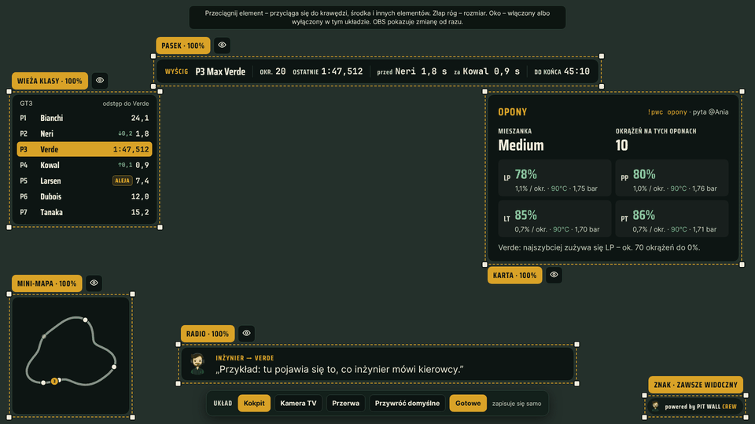
NOWENakładka OBS: wieża klasy, karty zdarzeń i komendy widzów z czatu Twitcha.

NOWEStrona „Nakładka OBS” z opisem i 5 krokami na start.
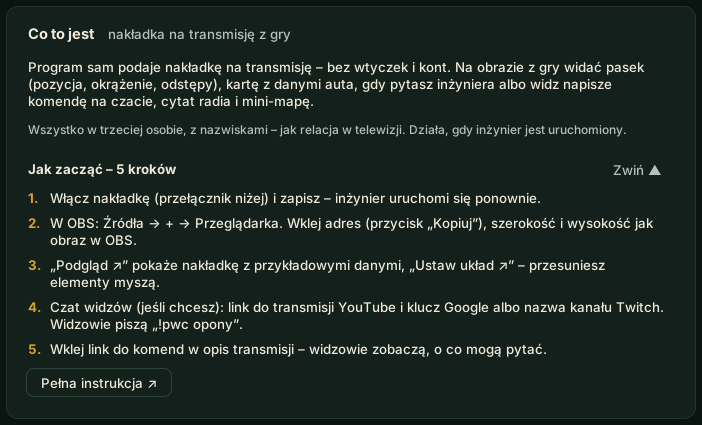
NOWEPorównanie aut w funkcjach eksperymentalnych, z czasem pitstopów; głosem „które auto lepsze?”.

NOWERada o oponach liczy, że nowe zimne opony są na początku wolniejsze.
NOWEInżynier odpowiada na „jak uszkodzenia silnika?”.
NOWEAssetto Corsa z CSP: przód i tył na granicy przyczepności prosto z danych opon gry.
POPRAWKACiśnienia: krótka rada, rzadziej, w wyścigu tylko przed pitstopem.
POPRAWKA„Zapisz setup” zapisuje też ciśnienia i rady z raportu.
POPRAWKAWczytanie innego setupu nie daje już fałszywych ostrzeżeń.
POPRAWKADługi łuk (np. Paddock Hill) to jeden zakręt.
POPRAWKAPit wall: poprawki tabeli rywali, wykresu pozycji i mapy porównania okrążeń.
POPRAWKA„Połącz z zespołem” od razu uruchamia inżyniera z nowym zespołem.
POPRAWKAOkno w innych językach: poprawna forma przy liczbie 1 (np. „1 lap”, nie „1 laps”).
Wersja 0.4.5.0 (22.11.2026)
NOWELinia jazdy (wersja próbna, pełna wersja): każda sekcja toru z góry – Twoja linia na tle najlepszej (Twojej albo kolegi z zespołu) i rady, gdzie jechać inaczej.
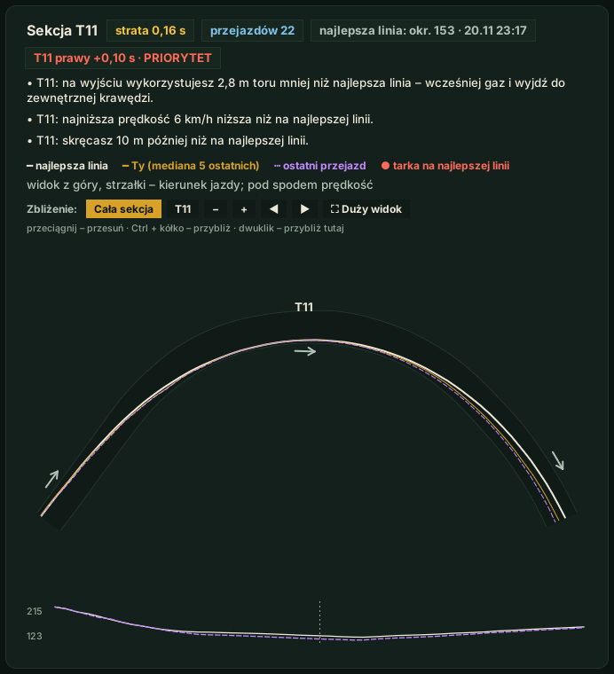
NOWENakładka OBS dla streamerów: pasek i karty z danymi auta, mini-mapa klasy, pojedynek (kto kogo dogoni i w którym stincie); widzowie pytają z czatu YouTube.
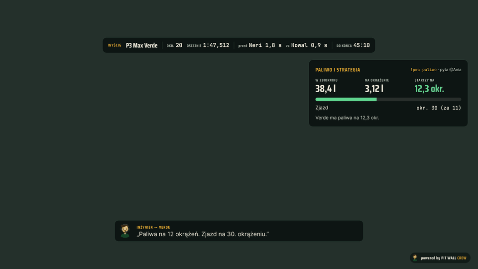
NOWENakładka działa też, gdy jedzie kolega z zespołu; ustawienia na stronie „Nakładka OBS” w oknie.
NOWENa mecie inżynier chwali cały zespół: najszybsze okrążenie i najrówniejsza jazda; nakładka OBS pokazuje kartę „META”.
NOWELimity toru z podziałem na kierowców auta – głosem i na nakładce.

NOWEPit wall: wykres pozycji całej klasy, linie jazdy kierowców w porównaniu okrążeń, „plan nieaktualny” i wiek opon rywali.

NOWEPit wall otwarty z programu pyta, zanim przełączy przeglądarkę na inny zespół; nazwa zespołu jest u góry.

NOWEPit wall „Na żywo”: ostatni stan auta, gdy nikt nie jedzie.
NOWEGrafik: godzina w grze obok prawdziwej, noc liczona z godziny w grze.
NOWETest mikrofonu z odsłuchem: po nagraniu słyszysz siebie i widzisz, co zrozumiał inżynier.

NOWE„Pierwsze kroki” odhaczają to, co już ustawione.

NOWENowe pytania: ostatni pitstop, postoje i wiek opon rywala, średnia z ostatnich okrążeń, „jak jedzie Amadeusz w T5?”, „ile razy wyjechałem poza tor?”, „czy jadę za ostro?”, „ile okrążeń przejedziemy?”.
NOWEGłosem: „przypomnij mi za 5 okrążeń, żeby…” i „pitstop za 12 okrążeń”.
NOWEZmiana kierowcy głosem krócej: „kierowca Stawicki”, także razem z paliwem i oponami.
NOWE„Pojedynek z Kowalskim” działa jak „pilnuj Kowalskiego”; komendę podpowiadają okno i nakładka OBS.
NOWEOstrzeżenia o dublowaniu „tylko przed hamowaniem”.
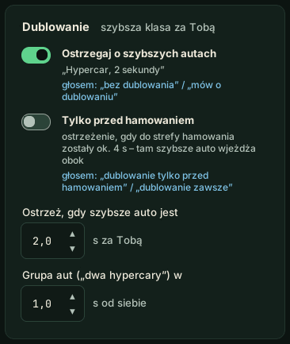
NOWEPiknięcia przy „naciśnij, mów, naciśnij” (można wyciszyć).

NOWEInżynier mówi, gdy zmienia się nagumowanie toru.
POPRAWKATemperatura hamulców w LMU w °C (była ok. 270° za wysoka).
POPRAWKAFair share: okrążenia kolegów z czasu, gdy program nie widział auta, nie trafiają już do kierowcy, który wsiadł.
POPRAWKAFair share liczy też kierowcę, który jeździ bez programu (z grafiku zespołu).
POPRAWKAPitstop zmierzony od połowy (przejęcie auta w boksie) nie psuje już czasów pitstopu w planie.
POPRAWKAOdprawa po przejęciu auta czeka do końca tankowania i podaje stan po serwisie.
POPRAWKAOdprawa dla następnego kierowcy: plan do mety liczony po tankowaniu.
POPRAWKAPorównanie okrążeń: dokładna strata, bez fałszywej straty na starcie.
POPRAWKANajlepsze okrążenie bez czasu skasowanego za limity toru.
POPRAWKALepsze rozpoznawanie mowy: nazwiska po brzmieniu, „Opony.” jako pytanie, więcej słów zamiast „pilnuj”.
POPRAWKAPo samym „pilnuj” inżynier pyta o nazwisko; rozumie też nazwisko przeliterowane.
POPRAWKA„Przestań pilnować” i „bez pilnowania” działają od razu, bez AI.
POPRAWKA„Ustaw paliwo na 80” ustawia tankowanie; AI nie ustawi tankowania, gdy o nim nie mówisz.
POPRAWKAAI: zdanie tłumacza o sobie nie jest już brane za słowa kierowcy.
POPRAWKAKomunikaty: sektor porządkowo, liczby z przecinkiem, rzadsze rady z okrążenia kolegi i ostrzeżenia o dublowaniu.
POPRAWKAInne języki: odpowiedzi, odprawy przy zmianie kierowcy, rady z okrążenia kolegi i ostrzeżenie o fair share przetłumaczone także bez klucza Groq.
POPRAWKAPit wall: fair share całego zespołu, pełna lista kierowców w planie stintów, auta na mapie bez cofania.
POPRAWKAOkno: wyczyszczone pole „Stint” nie wraca do starej wartości.
POPRAWKAŻeton „Zespół” w oknie pokazuje wprost połączenie i kierowcę.
POPRAWKASpotter: po „three wide” od razu mówi „two wide” i stronę rywala.
POPRAWKAInne języki: odpowiedzi AI zawsze w języku kierowcy (zdarzały się po polsku).
POPRAWKACzat YouTube: komendy widzów trafiają na ekran po 1–2 s (jedno połączenie zamiast odpytywania).
POPRAWKAZamknięcie systemu Windows nie jest już zgłaszane jako awaria inżyniera.
Wersja 0.4.4.12 (20.11.2026)
POPRAWKAMapka toru w raporcie: szykany (np. pierwsza na Monzy) mają prawdziwy kształt po jednym czystym okrążeniu.
Wersja 0.4.4.11 (20.11.2026)
NOWEFunkcje eksperymentalne (testerzy): karta „Test setupu” – A/B z poprawką na paliwo i opony, zakręty, zużycie opon, balans; głosem „testuję nowy setup”.

POPRAWKAInżynier rozumie więcej pytań, także w innych językach: „ile do trzeciego?”, „limity toru?”, „co z fast bump?”, „ustaw 15 litrów”, „czy mnie słyszysz?”.
POPRAWKAGdy inżynier nie zrozumie pytania, mówi to w języku kierowcy.
POPRAWKA„Pilnuj …” na treningu i w kwalifikacjach porównuje ostatnie okrążenia.
POPRAWKA„Jak opony?” po pitstopie mówi tylko o nowych oponach.
POPRAWKAOcena zmiany po radzie o tarkach i dobijaniu jest konkretna.
POPRAWKAMonza: numery zakrętów jak na mapie w kokpicie; łuk w pełnym gazie nie jest zakrętem.
POPRAWKAPytania o raport z jazdy: inżynier zna też hamulce i ciśnienia opon.
POPRAWKAPit wall: poprawki z przeglądu kodu (dopisywanie kierowców, mapa toru, eksport CSV).
Wersja 0.4.4.10 (16.11.2026)
POPRAWKAPorsche 911 GT3 R (LMU): rady do amortyzatorów w dobrą stronę – 1 to najtwardsze, 18 najmiększe.
Wersja 0.4.4.9 (16.11.2026)
NOWEGłośność głosem: „głośniej” / „ciszej” i „spotter głośniej” / „spotter ciszej”; osobny suwak głośności spottera.

POPRAWKAAssetto Corsa: rada o ciśnieniu mówi, które koło (lewa / prawa), gdy się różnią.
Wersja 0.4.4.8 (15.11.2026)
POPRAWKAAssetto Corsa: mapka toru w raporcie z jazdy znów się pokazuje.
Wersja 0.4.4.7 (15.11.2026)
NOWERaport z jazdy, karta „Paliwo” / „Energia”: także najwięcej zużyte na jednym okrążeniu (przy energii też paliwo).

POPRAWKAPasek bez tekstu pod „Komunikaty” po pierwszym starcie nowej wersji.
Wersja 0.4.4.6 (15.11.2026)
POPRAWKAOkno nie zacina się już na chwilę przy sprawdzaniu aktualizacji po uruchomieniu.
POPRAWKAPolecenia postoju: „ciśnienie przód, o 2 w dół” z przecinkiem, poprawka w zdaniu („albo nie, lewe”) i „zatankuj do połowy”.
What's new
Changes in the latest Pit Wall Crew versions.
Version 0.4.6.0 (25.11.2026)
NEWiRacing: engineer, spotter and pit wall – fuel, strategy, rivals, weather and the drive report, as in LMU.
NEWiRacing: voice pit stop – fuel, tyres, pressures, quick repair, windscreen clean.
NEWiRacing: incidents, flags (also “Meatball”), pit lane and damage, by voice.
NEWiRacing: estimate of the iRating change, field strength and your place in the split.
NEWiRacing: report from telemetry files (.ibt) – tyres, wheel lock, suspension, pressure build-up.
NEWiRacing, ovals: tight or loose in each phase of the corner, coach against rivals and advice on what to change in the setup.

NEWiRacing: grid and line at the start and restart, positions counted live.
NEWiRacing: comparison of loaded setups and advice from tyre temperatures in the pits.
NEWiRacing: by voice – steering force, cameras, replay and the game chat.
NEWiRacing: track map and racing line from speed and car direction.
NEW“Fill up for the finish with the highest / average / lowest consumption”.
NEWSetting: answer the question straight away, even when someone is driving alongside.
NEWPit wall: steering trace in the lap comparison.
NEWDrive report in your units: fuel, temperatures, pressures, speeds and distances.
NEWEvent reminders: at the pit entry, after leaving the pits, when it starts to rain, on the last lap – also from the pit wall.
NEWRacing line in the drive report, from the coach in practice and to the question “how is my line in T5?”.
NEWFuel saving: where to lift off – braking after the longest straights, with distance.
NEWiRacing: when the pit lane opens under yellow – pit or stay out (fuel, tyres, positions).
NEWiRacing: repair time from the game in the assessment of whether the repair pays off.
NEWPit wall: when the driver is tired, a hint to change drivers at the next pit stop.
NEW“How much the engineer talks” also covers lapping, slow cars far away, incidents and saving; the “Only important in practice” switch.
NEW“Check everything” on the Support page – what works and what is missing.
NEWNew Help: Start (first steps, what to set up in LMU, Assetto Corsa and iRacing), Manual with one search, Support.
NEWCar comparison: an unticked car disappears from the comparison (its laps stay).
NEWiRacing: the engineer says when telemetry is not being recorded and suggests how to turn it on permanently.
NEWOBS overlay: ready-made bar settings in one click – Full, Short, Extended.
NEWOBS overlay: addresses of all layouts and the “Commands for viewers” link (for the stream description) on the Overlay tab; on the commands page, a link to Patreon.
NEWSpotter with spatial audio (option): a car on your left is heard in the left earphone.
NEWAfter the second off with the same cause, advice you can change from the cockpit: ABS, TC or brake balance.
NEWiRacing: countdown to your pit stall in the pit lane – 100, 50, 30, 20, 10 metres.
NEWInstaller in 7 languages.
FIXSpotter: during a long run alongside, “still on your left” less often, “clear” always straight away.
FIXSeveral slow cars at once – one warning instead of several.
FIXEntering a session in rain: “It is raining”, not “It is starting to rain”.
FIXClass named like the car, spoken by the brand alone (“Ligier, 2 seconds”).
FIXFalsely recognised sentences (e.g. film endings) do not reach the engineer.
FIXRival names without the number the game adds.
FIXPit stop set by voice: at the pit entry the engineer repeats your setting, not the plan.
FIXNo fuel-saving advice when there is enough fuel to the finish.
FIXTrack rubbering: silence for the first 2 minutes of each session, also after its restart.
FIXAI does not change tyres in the pit menu when you have not mentioned tyres.
FIX“What is my consumption?” gives the average per lap; in LMU “how rubbered is the track?” – the rubbering level.
FIXBetter understood: “what is my last time?”, “what are the gaps?”, “watch …” by the sound of the name, “I don't want to save”, “engine state”.
FIXA message from a pit wall colleague does not get lost behind newer engineer messages or after pressing the talk button.
FIXNo “Box, box” when you moved the stop on the pit lap (“target 25”).
FIXWatched rival: one sentence about the gap, not two.
FIXPressure advice for front and rear in one sentence.
FIXAssetto Corsa: “You have over-revved the engine” is also said when over-revving on each gear change – at most every 2 minutes or every 5% of engine life.
FIXShort tracks: sentences with a lap time under a minute translated into all languages.
FIXDemo: answers to “how many times have I gone off track?” and “am I driving too hard?”.
FIXAdvice after a lap: correct inflection of the corner list (“from 2 corners”); in other languages all advice without a Groq key.
FIXRace coach: praise at the finish without a corner number, like the tips.
FIXiRacing: close to the incident limit without encouragement to attack.
FIXDriving line: the dashed line shows your best lap instead of the last pass.
FIXOBS overlay, “Arrange layout”: a tower turned off in the program window has a crossed-out eye – clicking the eye turns it on.
FIXiRacing: rival descriptions and advice after a lap translated without a Groq key.
FIXWindow: smooth circles, checkmarks, slider knobs and the corner map in the report – no “jagged edges”; clear arrows “→”.
FIXEngineer page in a narrow window: statuses and notes in cards now wrap onto the next line instead of being cut off.
FIXTalk button: when the steering wheel appears after the program starts, the window shows its name instead of just “none”.
FIXPolish: “pitlane” instead of “aleja” – engineer, window, Pit Wall and OBS overlay.
FIXCorner map in the report: corner numbers beside the track, not on the line.
Version 0.4.5.1 (23.11.2026)
NEWOBS overlay: your own element layout for each scene, look set in the window.
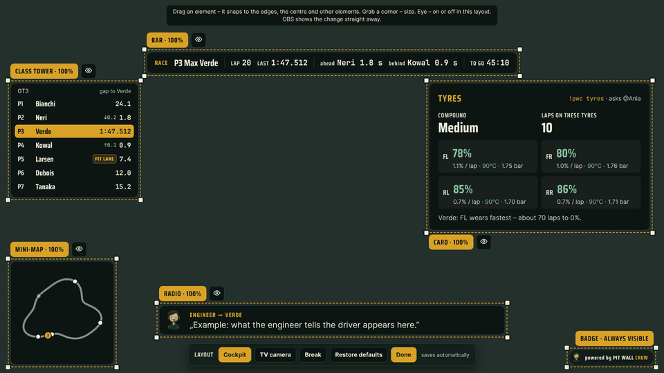
NEWOBS overlay: class tower, event cards and viewer commands from Twitch chat.
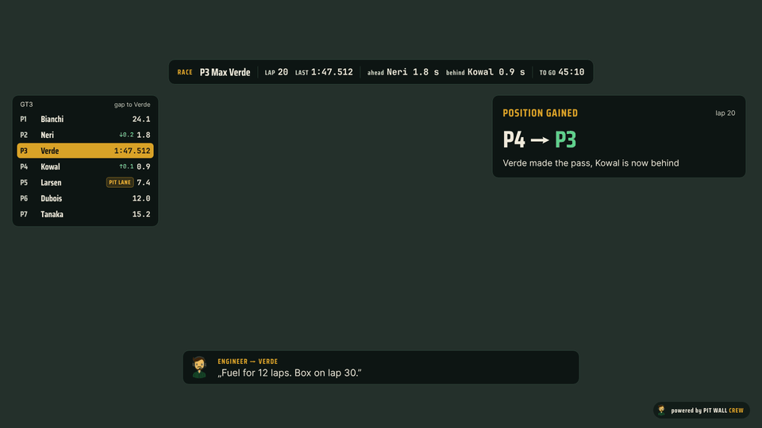
NEW“OBS overlay” page with a description and 5 steps to start.

NEWCar comparison in experimental features, with pit stop time; by voice “which car is better?”.
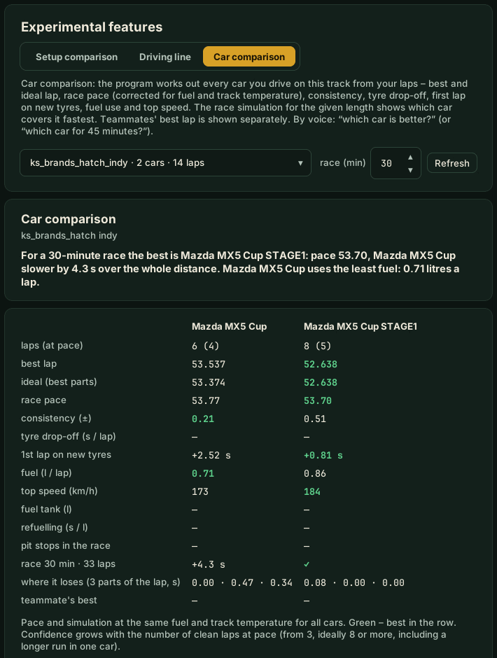
NEWTyre advice counts that new cold tyres are slower at first.
NEWThe engineer answers “how is the engine damage?”.
NEWAssetto Corsa with CSP: front and rear at the grip limit straight from the game's tyre data.
FIXPressures: short advice, less often, in the race only before a pit stop.
FIX“Save setup” also saves the pressures and the report advice.
FIXLoading another setup no longer gives false warnings.
FIXA long bend (e.g. Paddock Hill) is one corner.
FIXPit wall: fixes to the rivals table, position chart and lap-comparison map.
FIX“Connect to team” restarts the engineer with the new team right away.
FIXWindow: correct singular with the number 1 (e.g. “1 lap”, not “1 laps”).
Version 0.4.5.0 (22.11.2026)
NEWDriving line (trial version, full version): every track section from above – your line against the best one (yours or a teammate's) and advice on where to drive differently.

NEWOBS overlay for streamers: bar and cards with car data, class mini-map, duel (who catches whom and in which stint); viewers ask from the YouTube chat.

NEWThe overlay also works when a teammate is driving; settings on the “OBS overlay” page in the window.
NEWAt the finish the engineer praises the whole team: fastest lap and most consistent driving; the OBS overlay shows a “FINISH” card.
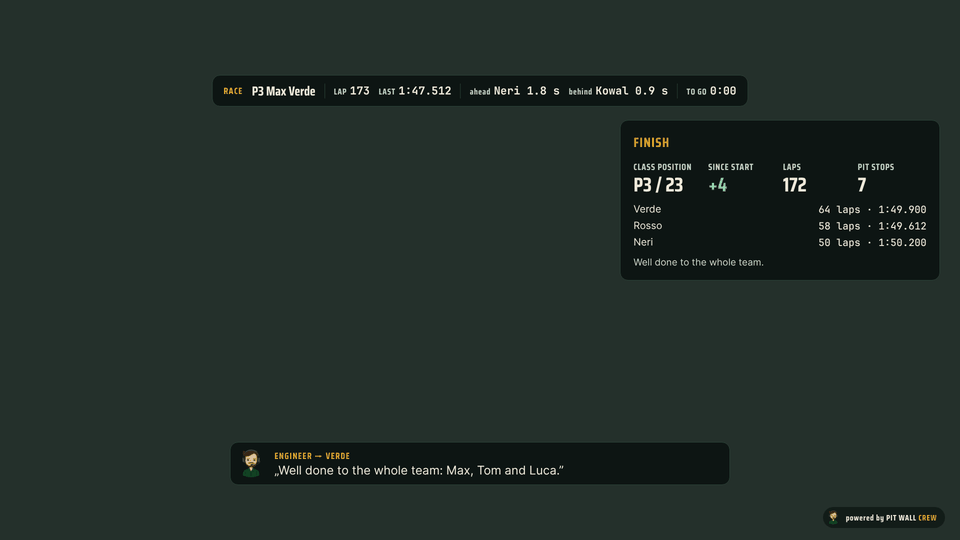
NEWTrack limits split by the car's drivers – by voice and on the overlay.
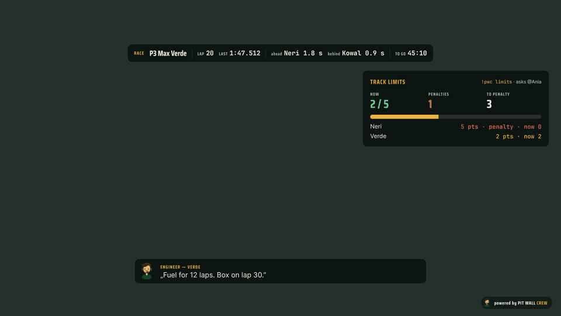
NEWPit Wall: position chart of the whole class, drivers' racing lines in the lap comparison, “plan outdated” and rivals' tyre age.
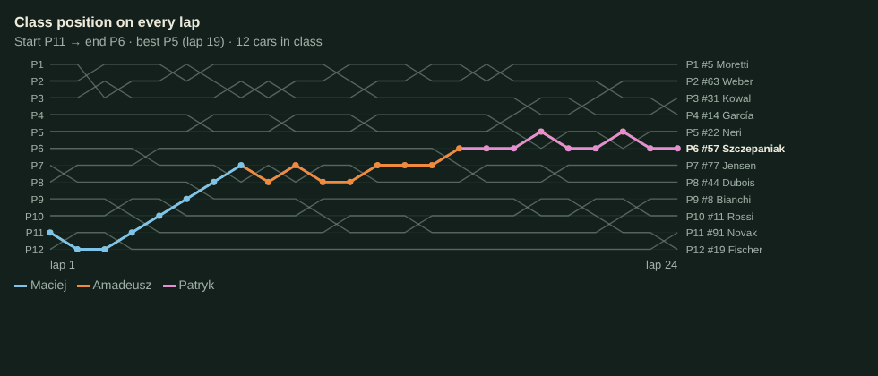
NEWThe Pit Wall opened from the program asks before switching the browser to another team; the team name is shown at the top.
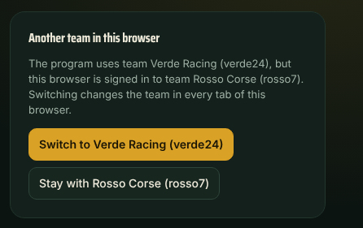
NEWPit Wall “Live”: the car's last state when nobody is driving.
NEWSchedule: in-game time next to real time, night counted from in-game time.
NEWMicrophone test with playback: after the recording you hear yourself and see what the engineer understood.
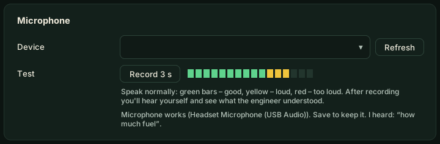
NEW“First steps” tick off what is already set up.
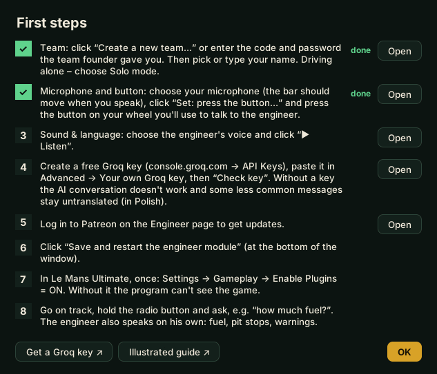
NEWNew questions: last pit stop, a rival's stops and tyre age, average of recent laps, “how is Amadeusz doing in T5?”, “how many times did I go off track?”, “am I overdriving?”, “how many laps will the race be?”.
NEWBy voice: “remind me in 5 laps to…” and “pit stop in 12 laps”.
NEWShorter driver change by voice: “driver Smith”.
NEW“Duel with Smith” works like “watch Smith”; the window and the OBS overlay show the command.
NEWLapping warnings “only before braking”.

NEWBeeps for “press, speak, press” (can be muted).

NEWThe engineer says when the track rubber changes.
FIXLMU brake temperatures in °C (were about 270° too high).
FIXFair share: teammates' laps from the time the program was not watching the car no longer go to the driver who got in.
FIXFair share also counts a driver who doesn't use the program (from the team schedule).
FIXA pit stop measured from the middle (taking over the car in the pits) no longer spoils pit stop times in the plan.
FIXThe briefing after taking over the car waits for refuelling to finish and gives the state after service.
FIXBriefing for the next driver: the plan to the finish is calculated after refuelling.
FIXLap comparison: exact loss, no false loss at the start.
FIXBest lap without a time deleted for track limits.
FIXBetter speech recognition: names by sound, “Tyres.” as a question, more words instead of “watch”.
FIXAfter “watch” alone the engineer asks for the surname; a spelled-out surname is understood too.
FIX“Stop watching” works straight away, without AI.
FIX“Set fuel to 80” sets refuelling; the AI no longer sets refuelling when you did not mention it.
FIXAI: the translator's sentence about itself is no longer taken as the driver's words.
FIXMessages: ordinal sectors, decimal commas, rarer advice from a teammate's lap and lapping warnings.
FIXOther languages: answers, driver-change briefings, tips from a teammate's lap and the fair share warning are translated also without a Groq key.
FIXPit Wall: fair share for the whole team, full driver list in the stint plan, cars on the map no longer jump back.
FIXWindow: a cleared “Stint” field no longer returns to the old value.
FIXThe “Team” chip in the window clearly shows the connection and the driver.
FIXSpotter: after “three wide” it immediately calls “two wide” and the rival's side.
FIXOther languages: AI answers always in the driver's language (some came out in Polish).
FIXYouTube chat: viewer commands reach the screen in 1–2 s (one connection instead of polling).
FIXShutting down Windows is no longer reported as an engineer crash.
Version 0.4.4.12 (20.11.2026)
FIXTrack map in the report: chicanes (e.g. the first one at Monza) get their real shape after one clean lap.
Version 0.4.4.11 (20.11.2026)
NEWExperimental features (testers): “Setup test” card – A/B corrected for fuel and tyres, corners, tyre wear, balance; by voice “I'm testing a new setup”.
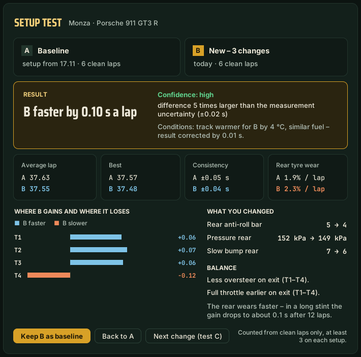
FIXThe engineer understands more questions, in other languages too: “how far is third?”, “track limits?”, “what about fast bump?”, “set 15 litres”, “can you hear me?”.
FIXWhen the engineer doesn't understand a question, he says so in the driver's language.
FIX“Watch …” in practice and qualifying compares last laps.
FIX“How are the tyres?” after a pitstop talks only about the new tyres.
FIXThe verdict on a change after kerb and bottoming advice is specific.
FIXMonza: corner numbers match the cockpit map; a bend taken flat out is not a corner.
FIXDriving report questions: the engineer also knows brakes and tyre pressures.
FIXPit Wall: fixes from the code review (adding drivers, track map, CSV export).
Version 0.4.4.10 (16.11.2026)
FIXPorsche 911 GT3 R (LMU): damper advice goes the right way – 1 is the stiffest, 18 the softest.
Version 0.4.4.9 (16.11.2026)
NEWVolume by voice: “louder” / “quieter” and “spotter louder” / “spotter quieter”; a separate spotter volume slider.

FIXAssetto Corsa: pressure advice says which wheel (left / right) when they differ.
Version 0.4.4.8 (15.11.2026)
FIXAssetto Corsa: the track map in the driving report shows again.
Version 0.4.4.7 (15.11.2026)
NEWDriving report, “Fuel” / “Energy” card: also the most used on a single lap (with energy, fuel too).

FIXBlank bar under “Messages” on the first start of a new version.
Version 0.4.4.6 (15.11.2026)
FIXThe window no longer freezes briefly while checking for updates at startup.
FIXPit commands: “front pressure, 2 down” with a comma, correcting yourself mid-sentence (“no wait, left”) and “refuel to half”.
Was ist neu
Änderungen in den letzten Versionen von Pit Wall Crew.
Version 0.4.6.0 (25.11.2026)
NEUiRacing: Ingenieur, Spotter und Pit Wall – Sprit, Strategie, Rivalen, Wetter und Fahrbericht wie in LMU.
NEUiRacing: Boxenstopp per Stimme – Sprit, Reifen, Drücke, schnelle Reparatur, Scheibenwischen.
NEUiRacing: Incidents, Flaggen (auch „Meatball“), Boxengasse und Schäden per Stimme.
NEUiRacing: Schätzung der iRating-Änderung, Feldstärke und dein Platz im Split.
NEUiRacing: Bericht aus Telemetriedateien (.ibt) – Reifen, Blockieren der Räder, Fahrwerk, Druckanstieg.
NEUiRacing, Ovale: eng oder lose in jeder Phase der Kurve, Trainer im Vergleich zu Rivalen und Tipp, was am Setup zu ändern ist.
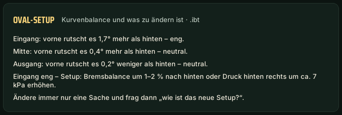
NEUiRacing: Startaufstellung und Linie beim Start und Restart, Positionen live gezählt.
NEUiRacing: Vergleich geladener Setups und Tipps aus den Reifentemperaturen in der Box.
NEUiRacing: per Stimme Lenkkraft, Kameras, Wiederholung und Spiel-Chat.
NEUiRacing: Streckenkarte und Fahrlinie aus Geschwindigkeit und Fahrzeugrichtung.
NEU„Tanke bis ins Ziel mit dem höchsten / mittleren / niedrigsten Verbrauch“.
NEUEinstellung: Antwort auf die Frage sofort, auch wenn jemand daneben fährt.
NEUPit Wall: Lenkungsverlauf im Rundenvergleich.
NEUFahrbericht in deinen Einheiten: Sprit, Temperaturen, Drücke, Geschwindigkeiten und Entfernungen.
NEUErinnerungen an Ereignisse: bei der Boxeneinfahrt, nach der Ausfahrt aus der Box, wenn es zu regnen beginnt, in der letzten Runde – auch vom Pit Wall.
NEUFahrlinie im Fahrbericht, beim Trainer im Training und auf die Frage „wie ist meine Linie in T5?“.
NEUSpritsparen: wo Gas wegnehmen – Bremspunkte nach den längsten Geraden, mit Entfernung.
NEUiRacing: wenn die Boxengasse unter Gelb öffnet – reinfahren oder draußen bleiben (Sprit, Reifen, Positionen).
NEUiRacing: Reparaturzeit aus dem Spiel bei der Einschätzung, ob sich die Reparatur lohnt.
NEUPit Wall: bei Ermüdung des Fahrers ein Hinweis auf einen Fahrerwechsel beim nächsten Boxenstopp.
NEU„Wie viel der Ingenieur spricht“ umfasst auch Rundenrückstände, langsame Autos weit weg, Incidents und Sparen; Schalter „Im Training nur Wichtiges“.
NEU„Alles prüfen“ auf der Seite Technischer Support – was funktioniert und was fehlt.
NEUNeue Hilfe: Start (erste Schritte, was du in LMU, Assetto Corsa und iRacing einstellst), Anleitung mit einer Suche, Technischer Support.
NEUAutovergleich: Ein abgewähltes Auto verschwindet aus dem Vergleich (die Runden bleiben).
NEUiRacing: Der Ingenieur sagt, wenn die Telemetrie nicht aufgezeichnet wird, und schlägt vor, wie man sie dauerhaft einschaltet.
NEUOBS-Overlay: fertige Leistenvorgaben mit einem Klick – Voll, Kurz, Erweitert.
NEUOBS-Overlay: Adressen aller Layouts und der Link „Befehle für Zuschauer“ (für die Streambeschreibung) im Tab Overlay; auf der Befehlsseite ein Link zu Patreon.
NEUSpotter mit Raumklang (Option): ein Auto links von dir ist im linken Ohrhörer zu hören.
NEUNach dem zweiten Ausflug mit derselben Ursache: Tipps, die du aus dem Cockpit ändern kannst: ABS, TC oder Bremsbalance.
NEUiRacing: Countdown zu deinem Boxenplatz in der Boxengasse – 100, 50, 30, 20, 10 Meter.
NEUInstallationsprogramm in 7 Sprachen.
KORREKTURSpotter: bei langer Fahrt nebeneinander „noch links“ seltener, „frei“ immer sofort.
KORREKTURMehrere langsame Autos gleichzeitig – eine Warnung statt mehrerer.
KORREKTUREinstieg in die Session bei Regen: „Es regnet“, nicht „Es beginnt zu regnen“.
KORREKTURKlasse nach dem Auto benannt, nur mit der Marke gesprochen („Ligier, 2 Sekunden“).
KORREKTURFälschlich erkannte Sätze (z. B. Filmschluss) landen nicht beim Ingenieur.
KORREKTURNamen der Rivalen ohne die Nummer, die das Spiel anhängt.
KORREKTURBoxenstopp per Stimme eingestellt: bei der Einfahrt wiederholt der Ingenieur deine Einstellung, nicht den Plan.
KORREKTURKeine Spar-Tipps, wenn der Sprit bis ins Ziel reicht.
KORREKTURStreckengummierung: zwei Minuten Stille zu Beginn jeder Session, auch nach einem Neustart.
KORREKTURDie KI ändert die Reifen im Boxenmenü nicht, wenn du nicht über Reifen gesprochen hast.
KORREKTUR„Wie ist mein Verbrauch?“ nennt den Durchschnitt pro Runde; in LMU „Wie gummiert ist die Strecke?“ – die Gummierungsstufe.
KORREKTURBesser verstanden: „Welche letzte Zeit habe ich?“, „Wie sind die Abstände?“, „Pass auf …“ am Klang des Namens, „Ich will nicht sparen“, „Motorzustand“.
KORREKTUREine Nachricht vom Pit-Wall-Kollegen geht nicht unter neueren Ingenieur-Meldungen verloren und nicht beim Drücken der Sprechtaste.
KORREKTURKein „Box, box“, wenn du den Stopp in der Boxenrunde verschoben hast („Ziel 25“).
KORREKTURBeobachteter Rivale: ein Satz zum Abstand, nicht zwei.
KORREKTURDruck-Tipp für vorne und hinten in einem Satz.
KORREKTURAssetto Corsa: „Du hast den Motor überdreht“ fällt auch beim Überdrehen bei jedem Gangwechsel – höchstens alle 2 Minuten oder alle 5 % Lebensdauer.
KORREKTURKurze Strecken: Sätze mit einer Rundenzeit unter einer Minute in allen Sprachen übersetzt.
KORREKTURDemo: Antwort auf „Wie oft bin ich neben der Strecke gewesen?“ und „Fahre ich zu hart?“.
KORREKTURTipps nach einer Runde: korrekte Beugung der Kurvenliste („aus 2 Kurven“); in anderen Sprachen alle Tipps ohne Groq-Schlüssel.
KORREKTURTrainer im Rennen: Lob im Ziel ohne Kurvennummer, wie die Tipps.
KORREKTURiRacing: nahe am Incident-Limit, ohne Anreize zum Angriff.
KORREKTURFahrlinie: Die gestrichelte Linie zeigt deine beste Runde statt der letzten Durchfahrt.
KORREKTUROBS-Overlay, „Layout anordnen“: Ein im Programmfenster ausgeschalteter Turm hat ein durchgestrichenes Auge – ein Klick auf das Auge schaltet ihn ein.
KORREKTURiRacing: Rivalen-Beschreibungen und Tipps nach einer Runde ohne Groq-Schlüssel übersetzt.
KORREKTURFenster: glatte Kreise, Häkchen, Schiebereglergriffe und der Kurvenausschnitt im Bericht – ohne gezackte Kanten; deutliche Pfeile „→“.
KORREKTURDie Seite Renningenieur im schmalen Fenster: Status und Hinweise in den Karten laufen jetzt in die nächste Zeile statt abgeschnitten zu werden.
KORREKTURSprechtaste: Wenn das Lenkrad nach dem Programmstart erscheint, zeigt das Fenster seinen Namen statt nur „keins“.
KORREKTURPolnisch: „pitlane“ statt „aleja“ – Renningenieur, Fenster, Pit Wall und OBS-Overlay.
KORREKTURKurvenkarte im Bericht: Kurvennummern neben der Strecke, nicht auf der Linie.
Version 0.4.5.1 (23.11.2026)
NEUOBS-Overlay: eigenes Layout der Elemente für jede Szene, Aussehen im Fenster einstellbar.

NEUOBS-Overlay: Klassenturm, Ereigniskarten und Zuschauerbefehle aus dem Twitch-Chat.

NEUSeite „OBS-Overlay“ mit Beschreibung und 5 Schritten zum Start.

NEUAutovergleich in den experimentellen Funktionen, mit Boxenstoppzeit; per Stimme „welches Auto ist besser?“.
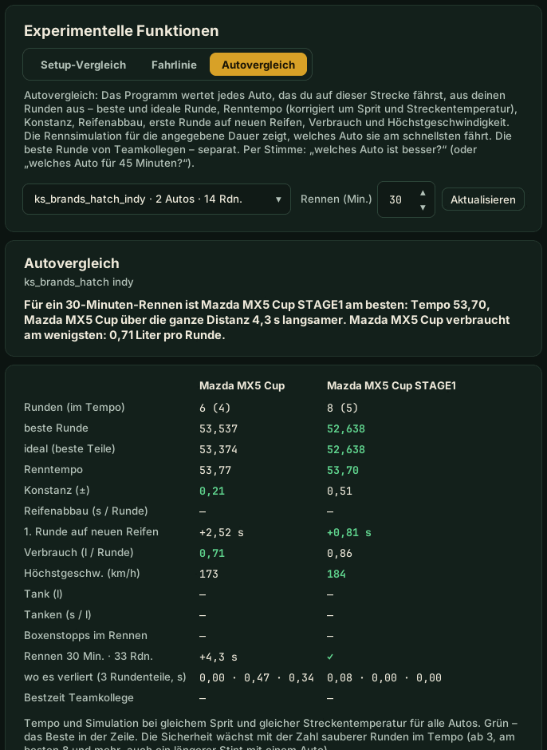
NEUDer Reifenrat berücksichtigt, dass neue kalte Reifen anfangs langsamer sind.
NEUDer Ingenieur beantwortet „wie ist der Motorschaden?“.
NEUAssetto Corsa mit CSP: vorne und hinten an der Haftgrenze direkt aus den Reifendaten des Spiels.
KORREKTURReifendruck: kurzer Rat, seltener, im Rennen nur vor dem Boxenstopp.
KORREKTUR„Setup speichern“ speichert auch Reifendrücke und Ratschläge aus dem Bericht.
KORREKTURDas Laden eines anderen Setups gibt keine falschen Warnungen mehr.
KORREKTUREin langer Bogen (z. B. Paddock Hill) ist eine Kurve.
KORREKTURPitwall: Korrekturen an Gegnertabelle, Positionsgrafik und Karte des Rundenvergleichs.
KORREKTUR„Mit Team verbinden“ startet den Ingenieur sofort mit dem neuen Team.
KORREKTURFenster: richtige Einzahl bei der Zahl 1 (z. B. „1 Runde“ statt „1 Runden“).
Version 0.4.5.0 (22.11.2026)
NEUFahrlinie (Testversion, Vollversion): jeder Streckenabschnitt von oben – deine Linie gegen die beste (deine oder die eines Teamkollegen) und Tipps, wo du anders fahren solltest.

NEUOBS-Overlay für Streamer: Leiste und Karten mit Fahrzeugdaten, Klassen-Minikarte, Duell (wer wen einholt und in welchem Stint); Zuschauer fragen über den YouTube-Chat.
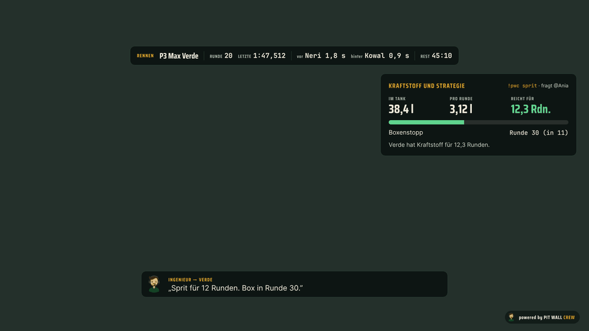
NEUDas Overlay funktioniert auch, wenn ein Teamkollege fährt; Einstellungen auf der Seite „OBS-Overlay“ im Fenster.
NEUIm Ziel lobt der Ingenieur das ganze Team: schnellste Runde und konstanteste Fahrt; das OBS-Overlay zeigt die Karte „ZIEL“.
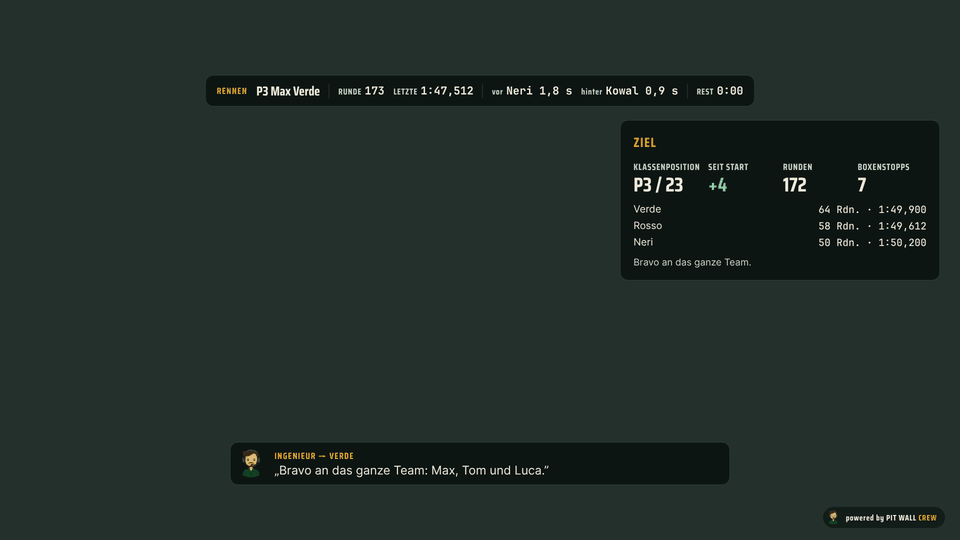
NEUTrack Limits aufgeteilt nach den Fahrern des Autos – per Stimme und im Overlay.

NEUPit Wall: Positionsdiagramm der ganzen Klasse, Fahrlinien der Fahrer im Rundenvergleich, „Plan veraltet“ und Reifenalter der Gegner.

NEUDie aus dem Programm geöffnete Pit Wall fragt, bevor sie den Browser auf ein anderes Team umstellt; der Teamname steht oben.

NEUPit Wall „Live“: letzter Stand des Autos, wenn niemand fährt.
NEUFahrerplan: Spielzeit neben der echten Uhrzeit, Nacht nach der Spielzeit.
NEUMikrofontest mit Wiedergabe: Nach der Aufnahme hörst du dich selbst und siehst, was der Ingenieur verstanden hat.
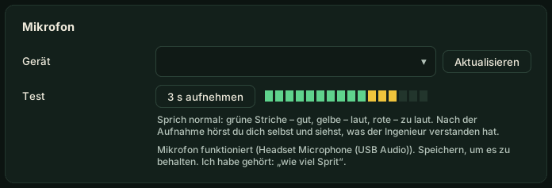
NEU„Erste Schritte“ haken ab, was schon eingerichtet ist.

NEUNeue Fragen: letzter Boxenstopp, Stopps und Reifenalter eines Gegners, Schnitt der letzten Runden, „wie fährt Amadeusz in T5?“, „wie oft war ich neben der Strecke?“, „fahre ich zu hart?“, „wie viele Runden hat das Rennen?“.
NEUPer Stimme: „erinnere mich in 5 Runden, dass…“ und „Boxenstopp in 12 Runden“.
NEUFahrerwechsel per Sprache kürzer: „Fahrer Müller“.
NEU„Duell mit Müller“ wirkt wie „beobachte Müller“; Fenster und OBS-Overlay zeigen den Befehl.
NEUÜberrundungswarnungen „nur vor dem Bremsen“.

NEUPieptöne bei „drücken, sprechen, drücken“ (stummschaltbar).

NEUDer Ingenieur sagt, wenn sich der Gummiabrieb auf der Strecke ändert.
KORREKTURBremstemperaturen in LMU in °C (waren etwa 270° zu hoch).
KORREKTURFair Share: Runden der Teamkollegen aus der Zeit, in der das Programm das Auto nicht gesehen hat, gehen nicht mehr an den Fahrer, der eingestiegen ist.
KORREKTURFair Share zählt auch einen Fahrer, der das Programm nicht nutzt (aus dem Stintplan des Teams).
KORREKTUREin ab der Mitte gemessener Boxenstopp (Autoübernahme in der Box) verfälscht die Stoppzeiten im Plan nicht mehr.
KORREKTURDas Briefing nach der Autoübernahme wartet bis zum Ende des Tankens und nennt den Stand nach dem Service.
KORREKTURBriefing für den nächsten Fahrer: Plan bis ins Ziel wird nach dem Tanken berechnet.
KORREKTURRundenvergleich: genauer Verlust, kein falscher Verlust am Start.
KORREKTURBeste Runde ohne wegen Track Limits gestrichene Zeit.
KORREKTURBessere Spracherkennung: Namen nach Klang, „Reifen.“ als Frage, mehr Wörter statt „beobachte“.
KORREKTURNach „beobachte“ allein fragt der Ingenieur nach dem Namen; ein buchstabierter Name wird auch verstanden.
KORREKTUR„Hör auf zu beobachten“ wirkt sofort, ohne KI.
KORREKTUR„Setze Sprit auf 80“ legt die Tankmenge fest; die KI ändert das Tanken nicht mehr, wenn du nicht davon sprichst.
KORREKTURKI: Ein Satz des Übersetzers über sich selbst gilt nicht mehr als Worte des Fahrers.
KORREKTURMeldungen: Sektoren als Ordnungszahl, Dezimalkomma, seltenere Tipps aus der Runde eines Teamkollegen und Überrundungswarnungen.
KORREKTURAndere Sprachen: Antworten, Briefings beim Fahrerwechsel, Tipps aus der Runde des Teamkollegen und die Fair-Share-Warnung sind auch ohne Groq-Schlüssel übersetzt.
KORREKTURPit Wall: Fair Share für das ganze Team, vollständige Fahrerliste im Stintplan, Autos auf der Karte springen nicht zurück.
KORREKTURFenster: ein geleertes Feld „Stint“ springt nicht auf den alten Wert zurück.
KORREKTURDer Chip „Team“ im Fenster zeigt klar die Verbindung und den Fahrer.
KORREKTURSpotter: nach „Three wide“ sagt er sofort „Two wide“ und die Seite des Gegners.
KORREKTURAndere Sprachen: KI-Antworten immer in der Sprache des Fahrers (kamen manchmal auf Polnisch).
KORREKTURYouTube-Chat: Zuschauerbefehle erscheinen nach 1–2 s (eine Verbindung statt Abfragen).
KORREKTURDas Herunterfahren von Windows wird nicht mehr als Absturz des Ingenieurs gemeldet.
Version 0.4.4.12 (20.11.2026)
KORREKTURStreckenkarte im Bericht: Schikanen (z. B. die erste in Monza) haben nach einer sauberen Runde ihre echte Form.
Version 0.4.4.11 (20.11.2026)
NEUExperimentelle Funktionen (Tester): Karte „Setup-Test“ – A/B bereinigt um Kraftstoff und Reifen, Kurven, Reifenverschleiß, Balance; per Stimme „ich teste ein neues Setup“.

KORREKTURDer Ingenieur versteht mehr Fragen, auch in anderen Sprachen: „wie weit ist der Dritte?“, „Track Limits?“, „was ist mit Fast Bump?“, „15 Liter einstellen“, „hörst du mich?“.
KORREKTURVersteht der Ingenieur eine Frage nicht, sagt er es in der Sprache des Fahrers.
KORREKTUR„Beobachte …“ in Training und Qualifying vergleicht die letzten Runden.
KORREKTUR„Wie sind die Reifen?“ nach dem Boxenstopp spricht nur über die neuen Reifen.
KORREKTURDie Bewertung einer Änderung nach dem Rat zu Randsteinen und Aufsetzen ist konkret.
KORREKTURMonza: Kurvennummern wie auf der Cockpit-Karte; ein Bogen mit Vollgas ist keine Kurve.
KORREKTURFragen zum Fahrbericht: Der Ingenieur kennt auch Bremsen und Reifendrücke.
KORREKTURPit Wall: Korrekturen aus dem Code-Review (Fahrer hinzufügen, Streckenkarte, CSV-Export).
Version 0.4.4.10 (16.11.2026)
KORREKTURPorsche 911 GT3 R (LMU): Dämpfer-Tipps in die richtige Richtung – 1 ist am härtesten, 18 am weichsten.
Version 0.4.4.9 (16.11.2026)
NEULautstärke per Stimme: „lauter“ / „leiser“ und „Spotter lauter“ / „Spotter leiser“; eigener Lautstärkeregler für den Spotter.

KORREKTURAssetto Corsa: Druckhinweis nennt das Rad (links / rechts), wenn sie sich unterscheiden.
Version 0.4.4.8 (15.11.2026)
KORREKTURAssetto Corsa: Die Streckenkarte im Fahrbericht wird wieder angezeigt.
Version 0.4.4.7 (15.11.2026)
NEUFahrbericht, Karte „Kraftstoff“ / „Energie“: auch der höchste Verbrauch auf einer Runde (bei Energie auch Kraftstoff).

KORREKTURLeerer Balken unter „Meldungen“ beim ersten Start einer neuen Version.
Version 0.4.4.6 (15.11.2026)
KORREKTURDas Fenster hängt beim Prüfen auf Updates nach dem Start nicht mehr kurz.
KORREKTURBoxenbefehle: „Druck vorne, 2 runter“ mit Komma, Korrektur im Satz („ich meine links“) und „bis zur Hälfte tanken“.
Nouveautés
Changements des dernières versions de Pit Wall Crew.
Version 0.4.6.0 (25.11.2026)
NOUVEAUiRacing : ingénieur, spotter et pit wall – carburant, stratégie, rivaux, météo et rapport de conduite comme dans LMU.
NOUVEAUiRacing : arrêt au stand par la voix – carburant, pneus, pressions, réparation rapide, nettoyage du pare-brise.
NOUVEAUiRacing : incidents, drapeaux (aussi « Meatball »), voie des stands et dégâts par la voix.
NOUVEAUiRacing : estimation du changement d'iRating, force du plateau et ta place dans le split.
NOUVEAUiRacing : rapport à partir des fichiers de télémétrie (.ibt) – pneus, blocages de roues, suspension, hausse des pressions.
NOUVEAUiRacing, ovales : serré ou lâche à chaque phase du virage, entraîneur face aux rivaux et conseil sur ce qu'il faut changer dans le setup.

NOUVEAUiRacing : ordre et trajectoire au départ et au redépart, positions calculées en direct.
NOUVEAUiRacing : comparaison des setups chargés et conseils d'après les températures des pneus aux stands.
NOUVEAUiRacing : par la voix, force du volant, caméras, replay et chat du jeu.
NOUVEAUiRacing : carte du circuit et trajectoire à partir de la vitesse et de la direction de la voiture.
NOUVEAU« Fais le plein pour l'arrivée avec la consommation la plus haute / moyenne / la plus basse ».
NOUVEAURéglage : réponse à la question tout de suite, même quand quelqu'un roule à côté.
NOUVEAUPit wall : tracé du volant dans la comparaison de tours.
NOUVEAURapport de conduite dans tes unités : carburant, températures, pressions, vitesses et distances.
NOUVEAURappels d'événements : à l'entrée des stands, après la sortie des stands, quand il commence à pleuvoir, au dernier tour – aussi depuis le pit wall.
NOUVEAUTrajectoire dans le rapport de conduite, chez l'entraîneur en entraînement et à la question « comment est ma trajectoire en T5 ? ».
NOUVEAUÉconomie de carburant : où lever le pied – freinages après les plus longues lignes droites, avec la distance.
NOUVEAUiRacing : quand la voie des stands s'ouvre sous jaune – rentrer ou rester (carburant, pneus, positions).
NOUVEAUiRacing : temps de réparation donné par le jeu dans l'évaluation de la rentabilité de la réparation.
NOUVEAUPit wall : en cas de fatigue du pilote, suggestion de relais au prochain arrêt.
NOUVEAU« Combien parle l'ingénieur » couvre aussi les doublages, les voitures lentes loin devant, les incidents et l'économie ; l'interrupteur « En entraînement, seulement l'important ».
NOUVEAU« Tout vérifier » sur la page Support technique – ce qui fonctionne et ce qui manque.
NOUVEAUNouvelle Aide : Démarrage (premiers pas, réglages à faire dans LMU, Assetto Corsa et iRacing), Mode d'emploi avec une seule recherche, Support technique.
NOUVEAUComparaison des voitures : une voiture décochée disparaît de la comparaison (ses tours restent).
NOUVEAUiRacing : l'ingénieur signale quand la télémétrie n'est pas enregistrée et indique comment l'activer en permanence.
NOUVEAUOverlay OBS : réglages prêts à l'emploi de la barre en un clic – Complet, Court, Étendu.
NOUVEAUOverlay OBS : adresses de toutes les dispositions et lien « Commandes pour les spectateurs » (à coller dans la description du direct) dans l'onglet Overlay ; sur la page des commandes, un lien vers Patreon.
NOUVEAUSpotter en son spatial (option) : une voiture à ta gauche s'entend dans l'écouteur gauche.
NOUVEAUAprès la deuxième sortie de piste pour la même cause, des conseils que tu peux modifier depuis le cockpit : ABS, TC ou répartition de freinage.
NOUVEAUiRacing : compte à rebours vers ta place aux stands dans la voie des stands – 100, 50, 30, 20, 10 mètres.
NOUVEAUInstallateur en 7 langues.
CORRECTIONSpotter : lors d'un long passage côte à côte, « toujours à gauche » moins souvent, « libre » toujours tout de suite.
CORRECTIONPlusieurs voitures lentes à la fois – un seul avertissement au lieu de plusieurs.
CORRECTIONEntrée en session sous la pluie : « Il pleut », et non « Il commence à pleuvoir ».
CORRECTIONCatégorie nommée comme la voiture, prononcée par la seule marque (« Ligier, 2 secondes »).
CORRECTIONLes phrases reconnues à tort (par ex. des fins de films) n'arrivent pas à l'ingénieur.
CORRECTIONNoms des rivaux sans le numéro ajouté par le jeu.
CORRECTIONArrêt au stand réglé par la voix : à l'entrée, l'ingénieur répète ton réglage, pas le plan.
CORRECTIONPas de conseils d'économie quand il y a assez de carburant pour l'arrivée.
CORRECTIONGommage de la piste : silence pendant les 2 premières minutes de chaque session, aussi après son redémarrage.
CORRECTIONL'IA ne change pas les pneus dans le menu des stands si tu n'as pas parlé de pneus.
CORRECTION« Quelle est ma consommation ? » donne la moyenne par tour ; dans LMU « la piste est-elle gommée ? » – le niveau de gommage.
CORRECTIONMieux compris : « quel est mon dernier temps ? », « quels sont les écarts ? », « surveille … » au son du nom, « je ne veux pas économiser », « état du moteur ».
CORRECTIONUn message du coéquipier du pit wall ne se perd pas derrière les messages plus récents de l'ingénieur, ni après l'appui sur le bouton de parole.
CORRECTIONPas de « Box, box » si tu as décalé l'arrêt dans le tour des stands (« objectif 25 »).
CORRECTIONRival surveillé : une phrase sur l'écart, pas deux.
CORRECTIONConseil de pression pour l'avant et l'arrière en une seule phrase.
CORRECTIONAssetto Corsa : « Tu as sur-régimé le moteur » se dit aussi lors d'un sur-régime à chaque changement de rapport – au plus toutes les 2 minutes ou tous les 5 % de durée de vie.
CORRECTIONCircuits courts : phrases avec un temps de tour inférieur à une minute traduites dans toutes les langues.
CORRECTIONDémo : réponse à « combien de fois suis-je sorti de la piste ? » et « est-ce que je roule trop fort ? ».
CORRECTIONConseils après un tour : accord correct de la liste des virages (« depuis 2 virages ») ; dans les autres langues, tous les conseils sans clé Groq.
CORRECTIONEntraîneur en course : éloge à l'arrivée sans numéro de virage, comme les conseils.
CORRECTIONiRacing : proche de la limite d'incidents, sans encouragements à attaquer.
CORRECTIONTrajectoire : la ligne pointillée montre ton meilleur tour au lieu du dernier passage.
CORRECTIONOverlay OBS, « Disposer » : une tour désactivée dans la fenêtre du programme a un œil barré – un clic sur l’œil l’active.
CORRECTIONiRacing : descriptions des rivaux et conseils après un tour traduits sans clé Groq.
CORRECTIONFenêtre : cercles lisses, coches, poignées des curseurs et mini-carte du virage dans le rapport – sans bords dentelés ; flèches « → » bien visibles.
CORRECTIONPage Ingénieur dans une fenêtre étroite : les statuts et les notes des cartes passent maintenant à la ligne suivante au lieu d’être coupés.
CORRECTIONBouton pour parler : quand le volant apparaît après le lancement du programme, la fenêtre affiche son nom au lieu de seulement « aucun ».
CORRECTIONPolonais : « pitlane » au lieu de « aleja » – ingénieur, fenêtre, Pit Wall et overlay OBS.
CORRECTIONCarte du virage dans le rapport : numéros des virages à côté de la piste, pas sur la ligne.
Version 0.4.5.1 (23.11.2026)
NOUVEAUOverlay OBS : disposition propre des éléments pour chaque scène, apparence réglée dans la fenêtre.

NOUVEAUOverlay OBS : tour de classe, cartes d'événements et commandes des spectateurs du chat Twitch.

NOUVEAUPage « Overlay OBS » avec une description et 5 étapes pour démarrer.
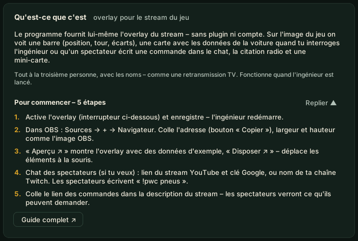
NOUVEAUComparaison de voitures dans les fonctions expérimentales, avec le temps des arrêts ; à la voix « quelle voiture est meilleure ? ».

NOUVEAULe conseil pneus tient compte du fait que des pneus neufs froids sont d'abord plus lents.
NOUVEAUL'ingénieur répond à « état du moteur ? ».
NOUVEAUAssetto Corsa avec CSP : avant et arrière à la limite d'adhérence directement depuis les données pneus du jeu.
CORRECTIONPressions : conseil court, moins souvent, en course seulement avant l'arrêt.
CORRECTION« Enregistre le setup » enregistre aussi les pressions et les conseils du rapport.
CORRECTIONCharger un autre setup ne donne plus de faux avertissements.
CORRECTIONUne longue courbe (p. ex. Paddock Hill) compte pour un seul virage.
CORRECTIONPit wall : corrections du tableau des rivaux, du graphique des positions et de la carte de comparaison des tours.
CORRECTION« Connecter à l'équipe » relance aussitôt l'ingénieur avec la nouvelle équipe.
CORRECTIONFenêtre : singulier correct avec le nombre 1 (p. ex. « 1 tour » et non « 1 tours »).
Version 0.4.5.0 (22.11.2026)
NOUVEAUTrajectoire (version d'essai, version complète) : chaque section du circuit vue de dessus – ta trajectoire face à la meilleure (la tienne ou celle d'un coéquipier) et des conseils pour rouler autrement.

NOUVEAUOverlay OBS pour streamers : barre et cartes avec les données de la voiture, mini-carte de la catégorie, duel (qui rattrape qui et dans quel relais) ; les spectateurs demandent depuis le chat YouTube.

NOUVEAUL'overlay fonctionne aussi quand un coéquipier roule ; réglages sur la page « Overlay OBS » de la fenêtre.
NOUVEAUÀ l'arrivée, l'ingénieur félicite toute l'équipe : meilleur tour et pilotage le plus régulier ; l'overlay OBS affiche la carte « ARRIVÉE ».

NOUVEAULimites de piste réparties par pilote de la voiture – à la voix et sur l'overlay.
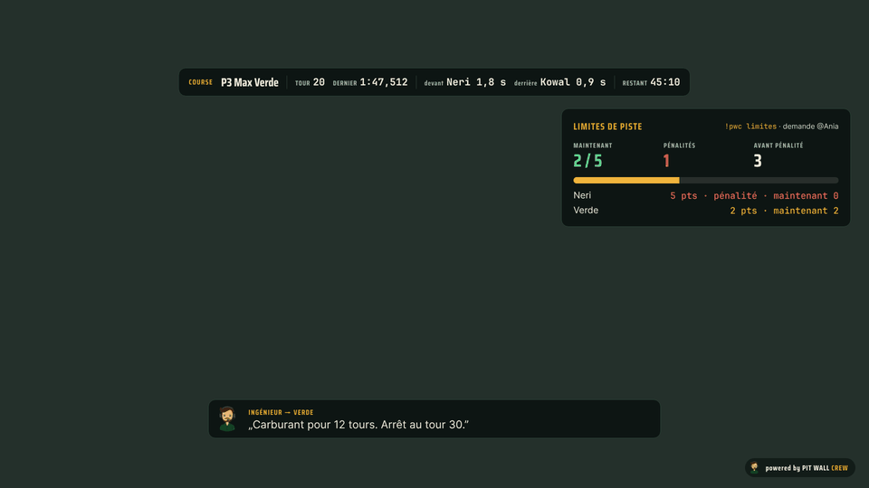
NOUVEAUPit Wall : graphique des positions de toute la catégorie, trajectoires des pilotes dans la comparaison des tours, « plan obsolète » et âge des pneus des rivaux.

NOUVEAULe Pit Wall ouvert depuis le programme demande confirmation avant de basculer le navigateur sur une autre équipe ; le nom de l'équipe est affiché en haut.

NOUVEAUPit Wall « En direct » : dernier état de la voiture quand personne ne roule.
NOUVEAUPlanning : heure du jeu à côté de l'heure réelle, nuit calculée sur l'heure du jeu.
NOUVEAUTest du micro avec réécoute : après l'enregistrement, tu t'entends et tu vois ce que l'ingénieur a compris.

NOUVEAU« Premiers pas » coche ce qui est déjà réglé.
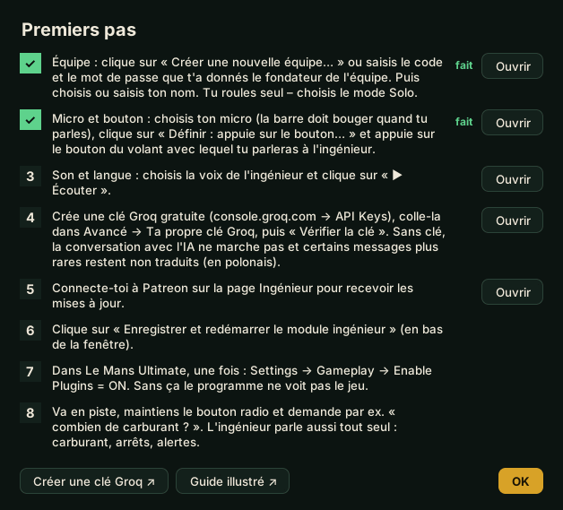
NOUVEAUNouvelles questions : dernier arrêt, arrêts et âge des pneus d'un rival, moyenne des derniers tours, « comment roule Amadeusz en T5 ? », « combien de fois suis-je sorti de la piste ? », « est-ce que je pousse trop ? », « combien de tours au total ? ».
NOUVEAUÀ la voix : « rappelle-moi dans 5 tours de… » et « arrêt dans 12 tours ».
NOUVEAUChangement de pilote à la voix, plus court : « pilote Dupont ».
NOUVEAU« Duel avec Dupont » agit comme « surveille Dupont » ; la fenêtre et l'overlay OBS rappellent la commande.
NOUVEAUAlertes de prise de tour « seulement avant le freinage ».
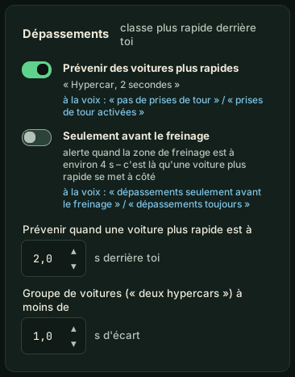
NOUVEAUBips pour « appuie, parle, appuie » (désactivables).

NOUVEAUL'ingénieur prévient quand la gomme sur la piste change.
CORRECTIONTempératures des freins dans LMU en °C (environ 270° de trop).
CORRECTIONFair share : les tours des coéquipiers faits quand le programme ne voyait pas la voiture ne vont plus au pilote qui est monté.
CORRECTIONLe fair share compte aussi un pilote qui n'utilise pas le programme (d'après le planning de l'équipe).
CORRECTIONUn pitstop mesuré à partir du milieu (reprise de la voiture au stand) ne fausse plus les temps de pitstop du plan.
CORRECTIONLe briefing après la reprise de la voiture attend la fin du ravitaillement et donne l'état après le service.
CORRECTIONBriefing pour le pilote suivant : plan jusqu'à l'arrivée calculé après le ravitaillement.
CORRECTIONComparaison des tours : perte exacte, sans fausse perte au départ.
CORRECTIONMeilleur tour sans temps annulé pour limites de piste.
CORRECTIONMeilleure reconnaissance vocale : noms selon le son, « Pneus. » comme question, plus de mots à la place de « surveille ».
CORRECTIONAprès « surveille » tout seul, l'ingénieur demande le nom ; un nom épelé est aussi compris.
CORRECTION« Arrête de surveiller » agit tout de suite, sans IA.
CORRECTION« Mets le carburant à 80 » règle le ravitaillement ; l'IA ne règle plus de ravitaillement si tu n'en parles pas.
CORRECTIONIA : une phrase du traducteur sur lui-même n'est plus prise pour les paroles du pilote.
CORRECTIONMessages : secteurs ordinaux, virgule décimale, conseils du tour d'un coéquipier et alertes de prise de tour moins fréquents.
CORRECTIONAutres langues : réponses, briefings au changement de pilote, conseils tirés du tour d'un coéquipier et alerte fair share traduits aussi sans clé Groq.
CORRECTIONPit Wall : fair share de toute l'équipe, liste complète des pilotes dans le plan des relais, voitures sur la carte sans retour en arrière.
CORRECTIONFenêtre : un champ « Relais » vidé ne revient plus à l'ancienne valeur.
CORRECTIONLe jeton « Équipe » de la fenêtre indique clairement la connexion et le pilote.
CORRECTIONSpotter : après « three wide », il annonce aussitôt « two wide » et le côté de l’adversaire.
CORRECTIONAutres langues : réponses de l’IA toujours dans la langue du pilote (certaines arrivaient en polonais).
CORRECTIONChat YouTube : les commandes des spectateurs s’affichent en 1 à 2 s (une connexion au lieu d’interrogations répétées).
CORRECTIONL’arrêt de Windows n’est plus signalé comme un plantage de l’ingénieur.
Version 0.4.4.12 (20.11.2026)
CORRECTIONCarte du circuit dans le rapport : les chicanes (p. ex. la première à Monza) ont leur vraie forme après un tour propre.
Version 0.4.4.11 (20.11.2026)
NOUVEAUFonctions expérimentales (testeurs) : carte « Test de setup » – A/B corrigé du carburant et des pneus, virages, usure des pneus, équilibre ; à la voix « je teste un nouveau setup ».

CORRECTIONL'ingénieur comprend plus de questions, aussi dans d'autres langues : « à combien est le troisième ? », « limites de piste ? », « et le fast bump ? », « mets 15 litres », « tu m'entends ? ».
CORRECTIONQuand l'ingénieur ne comprend pas une question, il le dit dans la langue du pilote.
CORRECTION« Surveille … » en essais et en qualifications compare les derniers tours.
CORRECTION« Comment sont les pneus ? » après un pitstop ne parle que des nouveaux pneus.
CORRECTIONL'avis sur un changement après le conseil sur les vibreurs et le talonnage est précis.
CORRECTIONMonza : numéros de virages comme sur la carte du cockpit ; une courbe à fond n'est pas un virage.
CORRECTIONQuestions sur le rapport de conduite : l'ingénieur connaît aussi les freins et les pressions des pneus.
CORRECTIONPit wall : corrections issues de la revue de code (ajout de pilotes, carte du circuit, export CSV).
Version 0.4.4.10 (16.11.2026)
CORRECTIONPorsche 911 GT3 R (LMU) : conseils d’amortisseurs dans le bon sens – 1 est le plus dur, 18 le plus souple.
Version 0.4.4.9 (16.11.2026)
NOUVEAUVolume à la voix : « plus fort » / « moins fort » et « spotter plus fort » / « spotter moins fort » ; curseur de volume séparé pour le spotter.

CORRECTIONAssetto Corsa : le conseil de pression précise la roue (gauche / droite) quand elles diffèrent.
Version 0.4.4.8 (15.11.2026)
CORRECTIONAssetto Corsa : la carte du circuit s'affiche à nouveau dans le rapport de conduite.
Version 0.4.4.7 (15.11.2026)
NOUVEAURapport de conduite, carte « Carburant » / « Énergie » : aussi le maximum utilisé sur un tour (avec l'énergie, le carburant aussi).

CORRECTIONBarre vide sous « Messages » au premier lancement d'une nouvelle version.
Version 0.4.4.6 (15.11.2026)
CORRECTIONLa fenêtre ne se fige plus un instant pendant la recherche de mises à jour au démarrage.
CORRECTIONCommandes d'arrêt : « pression avant, 2 en moins » avec virgule, correction en cours de phrase (« non, gauches ») et « plein à moitié ».
Novedades
Cambios en las últimas versiones de Pit Wall Crew.
Versión 0.4.6.0 (25.11.2026)
NUEVOiRacing: ingeniero, spotter y pit wall – combustible, estrategia, rivales, meteorología e informe de conducción como en LMU.
NUEVOiRacing: parada en boxes por voz – combustible, neumáticos, presiones, reparación rápida, limpieza del parabrisas.
NUEVOiRacing: incidentes, banderas (también «Meatball»), calle de boxes y daños por voz.
NUEVOiRacing: estimación del cambio de iRating, fuerza del campo y tu lugar en el split.
NUEVOiRacing: informe de los archivos de telemetría (.ibt) – neumáticos, bloqueo de ruedas, suspensión, aumento de presiones.
NUEVOiRacing, óvalos: apretado o suelto en cada fase de la curva, entrenador frente a los rivales y consejo sobre qué cambiar en el setup.

NUEVOiRacing: parrilla y trazada en la salida y el reinicio, posiciones calculadas en directo.
NUEVOiRacing: comparación de los setups cargados y consejos según las temperaturas de los neumáticos en boxes.
NUEVOiRacing: por voz, fuerza del volante, cámaras, repetición y chat del juego.
NUEVOiRacing: mapa del circuito y trazada a partir de la velocidad y la dirección del coche.
NUEVO«Reposta para la meta con el consumo más alto / medio / más bajo».
NUEVOAjuste: respuesta a la pregunta al momento, aunque alguien vaya a tu lado.
NUEVOPit wall: gráfica del volante en la comparación de vueltas.
NUEVOInforme de conducción en tus unidades: combustible, temperaturas, presiones, velocidades y distancias.
NUEVORecordatorios de eventos: al entrar a boxes, al salir de boxes, cuando empiece a llover, en la última vuelta – también desde el pit wall.
NUEVOTrazada en el informe de conducción, con el entrenador en entrenamientos y a la pregunta «¿cómo va mi trazada en T5?».
NUEVOAhorro de combustible: dónde levantar el pie – frenadas tras las rectas más largas, con distancia.
NUEVOiRacing: al abrirse la calle de boxes bajo amarilla – entrar o quedarte (combustible, neumáticos, posiciones).
NUEVOiRacing: tiempo de reparación del juego en la valoración de si la reparación compensa.
NUEVOPit wall: si el piloto se cansa, sugerencia de cambio de piloto en la próxima parada.
NUEVO«Cuánto habla el ingeniero» incluye también los adelantamientos, los coches lentos lejanos, los incidentes y el ahorro; el interruptor «En entrenamientos solo lo importante».
NUEVO«Revisa todo» en la página Soporte técnico – qué funciona y qué falta.
NUEVONueva Ayuda: Inicio (primeros pasos, qué ajustar en LMU, Assetto Corsa e iRacing), Manual con una sola búsqueda, Soporte técnico.
NUEVOComparación de coches: un coche desmarcado desaparece de la comparación (sus vueltas se conservan).
NUEVOiRacing: el ingeniero avisa cuando la telemetría no se graba y sugiere cómo activarla de forma permanente.
NUEVOOverlay de OBS: ajustes listos de la barra con un clic – Completo, Corto, Extendido.
NUEVOSuperposición OBS: direcciones de todos los diseños y el enlace «Comandos para espectadores» (para la descripción de la transmisión) en la pestaña Superposición; en la página de comandos, un enlace a Patreon.
NUEVOSpotter con audio espacial (opción): un coche a tu izquierda se oye en el auricular izquierdo.
NUEVOTras la segunda salida de pista con la misma causa, consejos que puedes cambiar desde la cabina: ABS, TC o reparto de frenada.
NUEVOiRacing: cuenta atrás hasta tu plaza en boxes dentro del pit lane – 100, 50, 30, 20, 10 metros.
NUEVOInstalador en 7 idiomas.
CORRECCIÓNSpotter: en un tramo largo al lado, «sigue por la izquierda» menos a menudo, «libre» siempre al momento.
CORRECCIÓNVarios coches lentos a la vez – un solo aviso en lugar de varios.
CORRECCIÓNEntrada a la sesión con lluvia: «Llueve», no «Empieza a llover».
CORRECCIÓNClase nombrada como el coche, dicha solo con la marca («Ligier, 2 segundos»).
CORRECCIÓNLas frases reconocidas por error (p. ej. finales de películas) no llegan al ingeniero.
CORRECCIÓNNombres de los rivales sin el número que añade el juego.
CORRECCIÓNParada configurada por voz: al entrar a boxes, el ingeniero repite tu ajuste, no el plan.
CORRECCIÓNSin consejos de ahorro cuando hay combustible para la meta.
CORRECCIÓNGoma en pista: silencio los primeros 2 minutos de cada sesión, también tras reiniciarla.
CORRECCIÓNLa IA no cambia los neumáticos en el menú de boxes si no has hablado de neumáticos.
CORRECCIÓN«¿Cuál es mi consumo?» da la media por vuelta; en LMU «¿cómo de gomeada está la pista?» – el nivel de goma.
CORRECCIÓNMejor entendido: «¿cuál es mi última vuelta?», «¿cuáles son los huecos?», «vigila …» por el sonido del nombre, «no quiero ahorrar», «estado del motor».
CORRECCIÓNUn mensaje del compañero del pit wall no se pierde entre los mensajes más recientes del ingeniero ni al pulsar el botón de hablar.
CORRECCIÓNSin «Box, box» si en la vuelta de boxes has desplazado la parada («objetivo 25»).
CORRECCIÓNRival vigilado: una frase sobre el hueco, no dos.
CORRECCIÓNConsejo de presiones para delante y detrás en una sola frase.
CORRECCIÓNAssetto Corsa: «Has pasado de vueltas el motor» también suena al pasarse de vueltas en cada cambio – como máximo cada 2 minutos o cada 5 % de vida útil.
CORRECCIÓNCircuitos cortos: frases con un tiempo de vuelta inferior a un minuto traducidas a todos los idiomas.
CORRECCIÓNDemo: respuesta a «¿cuántas veces me he salido de pista?» y «¿voy demasiado fuerte?».
CORRECCIÓNConsejos tras la vuelta: concordancia correcta de la lista de curvas («desde 2 curvas»); en otros idiomas, todos los consejos sin clave de Groq.
CORRECCIÓNEntrenador en carrera: elogio en meta sin número de curva, como los consejos.
CORRECCIÓNiRacing: cerca del límite de incidentes, sin incentivos para atacar.
CORRECCIÓNLínea de conducción: la línea discontinua muestra tu mejor vuelta en lugar de la última pasada.
CORRECCIÓNOverlay de OBS, «Colocar elementos»: una torre desactivada en la ventana del programa tiene un ojo tachado; un clic en el ojo la activa.
CORRECCIÓNiRacing: descripciones de rivales y consejos tras la vuelta traducidos sin clave de Groq.
CORRECCIÓNVentana: círculos suaves, marcas de casillas, mandos de los deslizadores y el mapa de la curva en el informe, sin bordes dentados; flechas «→» claras.
CORRECCIÓNPágina Ingeniero en una ventana estrecha: los estados y las notas de las tarjetas ahora pasan a la línea siguiente en lugar de cortarse.
CORRECCIÓNBotón para hablar: cuando el volante aparece después de iniciar el programa, la ventana muestra su nombre en lugar de solo «ninguno».
CORRECCIÓNPolaco: «pitlane» en lugar de «aleja»: ingeniero, ventana, Pit Wall y overlay de OBS.
CORRECCIÓNMapa de la curva en el informe: números de curva junto a la pista, no sobre la línea.
Versión 0.4.5.1 (23.11.2026)
NUEVOOverlay de OBS: disposición propia de los elementos para cada escena, aspecto ajustable en la ventana.
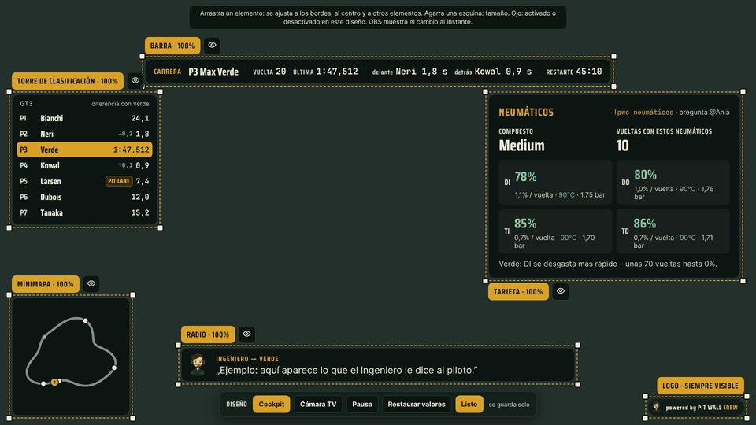
NUEVOOverlay de OBS: torre de clase, tarjetas de eventos y comandos de espectadores del chat de Twitch.

NUEVOPágina «Overlay de OBS» con descripción y 5 pasos para empezar.

NUEVOComparación de coches en funciones experimentales, con el tiempo de parada; por voz «¿qué coche es mejor?».
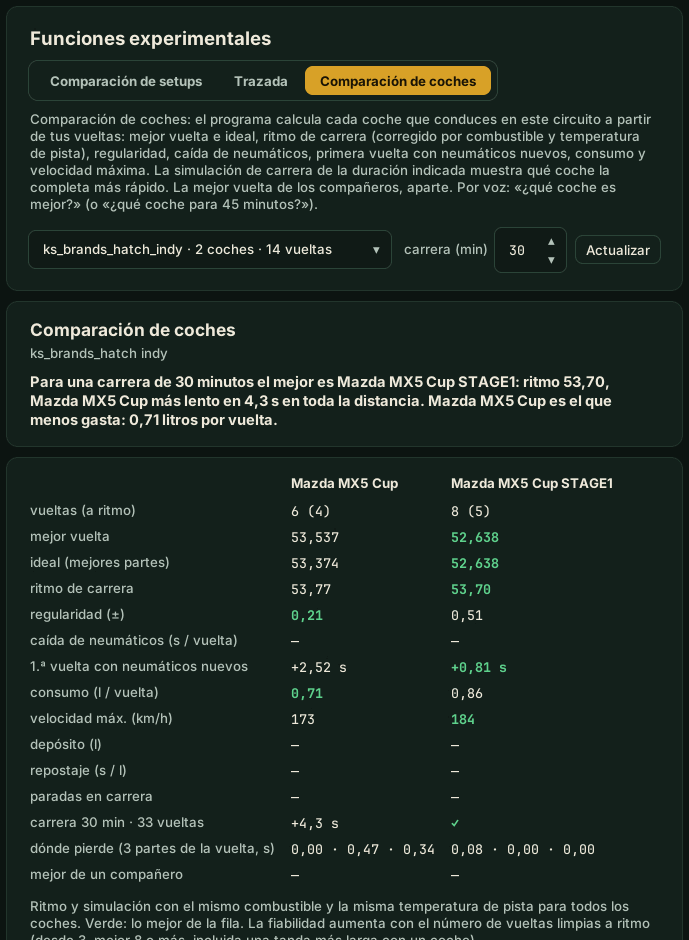
NUEVOEl consejo de neumáticos tiene en cuenta que los nuevos fríos son al principio más lentos.
NUEVOEl ingeniero responde a «¿daños del motor?».
NUEVOAssetto Corsa con CSP: delante y detrás al límite de agarre directamente de los datos de neumáticos del juego.
CORRECCIÓNPresiones: consejo breve, menos a menudo, en carrera solo antes de la parada.
CORRECCIÓN«Guarda el setup» guarda también las presiones y los consejos del informe.
CORRECCIÓNCargar otro setup ya no da avisos falsos.
CORRECCIÓNUn arco largo (p. ej. Paddock Hill) es una sola curva.
CORRECCIÓNPit wall: correcciones en la tabla de rivales, el gráfico de posiciones y el mapa de comparación de vueltas.
CORRECCIÓN«Conectar con el equipo» reinicia al ingeniero con el nuevo equipo al instante.
CORRECCIÓNVentana: singular correcto con el número 1 (p. ej. «1 vuelta», no «1 vueltas»).
Versión 0.4.5.0 (22.11.2026)
NUEVOTrazada (versión de prueba, versión completa): cada sección del circuito desde arriba – tu trazada frente a la mejor (tuya o de un compañero) y consejos sobre dónde conducir distinto.

NUEVOOverlay OBS para streamers: barra y tarjetas con datos del coche, minimapa de la categoría, duelo (quién alcanza a quién y en qué stint); los espectadores preguntan desde el chat de YouTube.

NUEVOEl overlay también funciona cuando conduce un compañero; ajustes en la página «Overlay OBS» de la ventana.
NUEVOEn la meta el ingeniero felicita a todo el equipo: vuelta más rápida y conducción más constante; el overlay de OBS muestra la tarjeta «META».

NUEVOLímites de pista divididos por pilotos del coche – por voz y en el overlay.

NUEVOPit Wall: gráfico de posiciones de toda la categoría, trazadas de los pilotos en la comparación de vueltas, «plan desactualizado» y edad de neumáticos de los rivales.
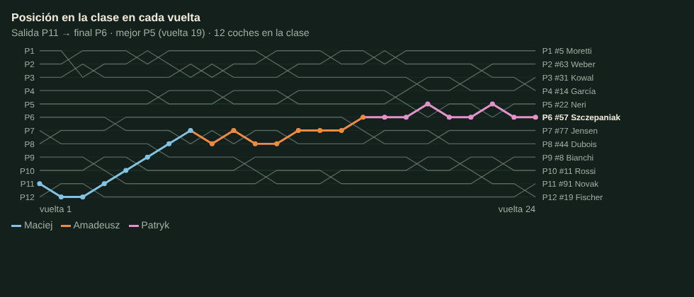
NUEVOEl Pit Wall abierto desde el programa pide confirmación antes de cambiar el navegador a otro equipo; el nombre del equipo aparece arriba.
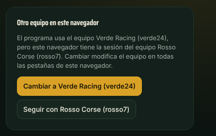
NUEVOPit Wall «En directo»: último estado del coche cuando nadie conduce.
NUEVOHorario: hora del juego junto a la real, noche calculada con la hora del juego.
NUEVOPrueba de micrófono con reproducción: tras la grabación te oyes a ti mismo y ves lo que entendió el ingeniero.
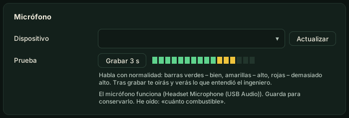
NUEVO«Primeros pasos» marca lo que ya está configurado.

NUEVONuevas preguntas: último pitstop, paradas y edad de neumáticos de un rival, media de las últimas vueltas, «¿cómo va Amadeusz en la T5?», «¿cuántas veces me he salido de la pista?», «¿voy demasiado al límite?», «¿cuántas vueltas tendrá la carrera?».
NUEVOPor voz: «recuérdame en 5 vueltas que…» y «pitstop en 12 vueltas».
NUEVOCambio de piloto por voz más corto: «piloto García».
NUEVO«Duelo con García» funciona como «vigila a García»; la ventana y el overlay de OBS recuerdan el comando.
NUEVOAvisos de doblaje «solo antes de frenar».
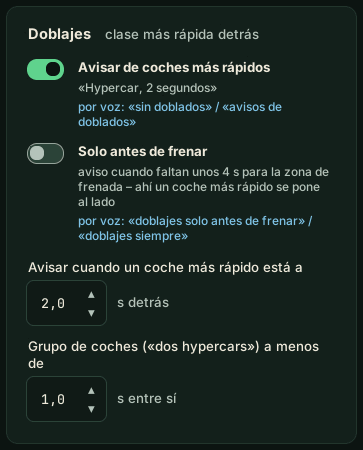
NUEVOPitidos con «pulsa, habla, pulsa» (se pueden silenciar).
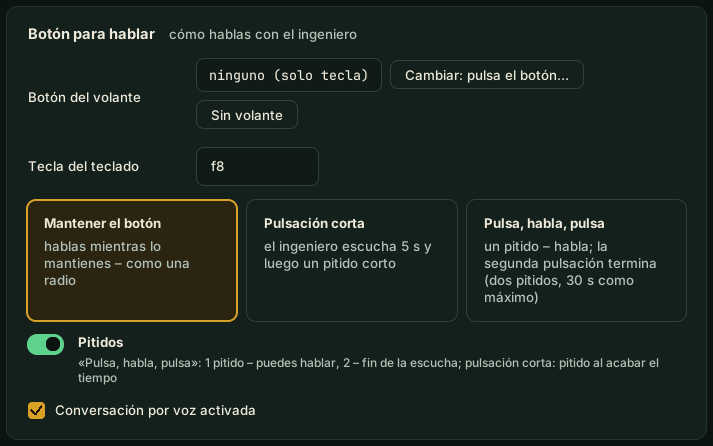
NUEVOEl ingeniero avisa cuando cambia la goma en la pista.
CORRECCIÓNTemperatura de frenos en LMU en °C (era unos 270° más alta).
CORRECCIÓNFair share: las vueltas de los compañeros dadas cuando el programa no veía el coche ya no se le apuntan al piloto que se subió.
CORRECCIÓNEl fair share cuenta también a un piloto que no usa el programa (según los turnos del equipo).
CORRECCIÓNUn pitstop medido desde la mitad (al coger el coche en boxes) ya no estropea los tiempos de pitstop del plan.
CORRECCIÓNEl briefing al coger el coche espera al final del repostaje y da el estado tras el servicio.
CORRECCIÓNBriefing para el siguiente piloto: plan hasta meta calculado después del repostaje.
CORRECCIÓNComparación de vueltas: pérdida exacta, sin falsa pérdida en la salida.
CORRECCIÓNMejor vuelta sin tiempo anulado por límites de pista.
CORRECCIÓNMejor reconocimiento de voz: nombres por sonido, «Neumáticos.» como pregunta, más palabras en lugar de «vigila».
CORRECCIÓNCon «vigila» a secas, el ingeniero pregunta el apellido; también entiende un apellido deletreado.
CORRECCIÓN«Deja de vigilar» funciona al instante, sin IA.
CORRECCIÓN«Pon el combustible a 80» ajusta el repostaje; la IA ya no ajusta el repostaje si no hablas de él.
CORRECCIÓNIA: una frase del traductor sobre sí mismo ya no se toma como palabras del piloto.
CORRECCIÓNMensajes: sectores ordinales, coma decimal, menos consejos de la vuelta de un compañero y menos avisos de doblaje.
CORRECCIÓNOtros idiomas: respuestas, briefings del cambio de piloto, consejos de la vuelta de un compañero y aviso de fair share traducidos también sin clave Groq.
CORRECCIÓNPit Wall: fair share de todo el equipo, lista completa de pilotos en el plan de stints, coches en el mapa sin retroceder.
CORRECCIÓNVentana: un campo «Stint» vaciado ya no vuelve al valor anterior.
CORRECCIÓNLa ficha «Equipo» de la ventana muestra claramente la conexión y el piloto.
CORRECCIÓNSpotter: tras «three wide» dice enseguida «two wide» y el lado del rival.
CORRECCIÓNOtros idiomas: las respuestas de la IA siempre en el idioma del piloto (algunas salían en polaco).
CORRECCIÓNChat de YouTube: los comandos de los espectadores aparecen en 1–2 s (una conexión en lugar de consultas repetidas).
CORRECCIÓNApagar Windows ya no se notifica como un fallo del ingeniero.
Versión 0.4.4.12 (20.11.2026)
CORRECCIÓNMapa del circuito en el informe: las chicanes (p. ej. la primera de Monza) tienen su forma real tras una vuelta limpia.
Versión 0.4.4.11 (20.11.2026)
NUEVOFunciones experimentales (testers): tarjeta «Prueba de setup» – A/B corregido por combustible y neumáticos, curvas, desgaste, balance; por voz «estoy probando un setup nuevo».

CORRECCIÓNEl ingeniero entiende más preguntas, también en otros idiomas: «¿a cuánto está el tercero?», «¿límites de pista?», «¿y el fast bump?», «pon 15 litros», «¿me oyes?».
CORRECCIÓNCuando el ingeniero no entiende una pregunta, lo dice en el idioma del piloto.
CORRECCIÓN«Vigila a …» en libres y clasificación compara las últimas vueltas.
CORRECCIÓN«¿Cómo van los neumáticos?» tras un pitstop habla solo de los neumáticos nuevos.
CORRECCIÓNLa valoración de un cambio tras el consejo sobre pianos y golpes contra el suelo es concreta.
CORRECCIÓNMonza: números de curva como en el mapa de la cabina; una curva a fondo no es una curva.
CORRECCIÓNPreguntas sobre el informe de conducción: el ingeniero también conoce los frenos y las presiones.
CORRECCIÓNPit wall: correcciones de la revisión de código (añadir pilotos, mapa del circuito, exportación CSV).
Versión 0.4.4.10 (16.11.2026)
CORRECCIÓNPorsche 911 GT3 R (LMU): consejos de amortiguadores en la dirección correcta – 1 es el más duro, 18 el más blando.
Versión 0.4.4.9 (16.11.2026)
NUEVOVolumen por voz: «más alto» / «más bajo» y «spotter más alto» / «spotter más bajo»; control de volumen propio del spotter.

CORRECCIÓNAssetto Corsa: el consejo de presión indica la rueda (izquierda / derecha) cuando difieren.
Versión 0.4.4.8 (15.11.2026)
CORRECCIÓNAssetto Corsa: el mapa del circuito vuelve a verse en el informe de conducción.
Versión 0.4.4.7 (15.11.2026)
NUEVOInforme de conducción, tarjeta «Combustible» / «Energía»: también lo máximo gastado en una vuelta (con energía, también el combustible).

CORRECCIÓNBarra vacía bajo «Mensajes» en el primer inicio de una versión nueva.
Versión 0.4.4.6 (15.11.2026)
CORRECCIÓNLa ventana ya no se congela un momento al buscar actualizaciones al iniciar.
CORRECCIÓNÓrdenes de parada: «presión delante, 2 abajo» con coma, corregirse en la frase («no, izquierdos») y «reposta hasta la mitad».
Novità
Modifiche nelle ultime versioni di Pit Wall Crew.
Versione 0.4.6.0 (25.11.2026)
NUOVOiRacing: ingegnere, spotter e pit wall – carburante, strategia, avversari, meteo e report di guida come in LMU.
NUOVOiRacing: sosta ai box a voce – carburante, gomme, pressioni, riparazione rapida, pulizia del parabrezza.
NUOVOiRacing: incidenti, bandiere (anche «Meatball»), corsia box e danni a voce.
NUOVOiRacing: stima della variazione di iRating, forza del campo e la tua posizione nello split.
NUOVOiRacing: report dai file di telemetria (.ibt) – gomme, bloccaggio delle ruote, sospensioni, aumento delle pressioni.
NUOVOiRacing, ovali: stretta o larga in ogni fase della curva, allenatore a confronto con gli avversari e consiglio su cosa cambiare nel setup.

NUOVOiRacing: griglia e traiettoria alla partenza e al ripartenza, posizioni calcolate in tempo reale.
NUOVOiRacing: confronto dei setup caricati e consigli dalle temperature delle gomme ai box.
NUOVOiRacing: a voce forza del volante, telecamere, replay e chat di gioco.
NUOVOiRacing: mappa del tracciato e traiettoria dalla velocità e dalla direzione dell'auto.
NUOVO«Fai rifornimento per l'arrivo con il consumo più alto / medio / più basso».
NUOVOImpostazione: risposta alla domanda subito, anche quando qualcuno guida al tuo fianco.
NUOVOPit wall: grafico dello sterzo nel confronto dei giri.
NUOVOReport di guida nelle tue unità: carburante, temperature, pressioni, velocità e distanze.
NUOVOPromemoria per eventi: all'ingresso ai box, dopo l'uscita dai box, quando inizia a piovere, all'ultimo giro – anche dal pit wall.
NUOVOTraiettoria nel report di guida, dall'allenatore nelle prove e alla domanda «com'è la mia traiettoria in T5?».
NUOVORisparmio di carburante: dove alzare il piede – frenate dopo i rettilinei più lunghi, con la distanza.
NUOVOiRacing: all'apertura della corsia box sotto bandiera gialla – entrare o restare (carburante, gomme, posizioni).
NUOVOiRacing: tempo di riparazione dal gioco nella valutazione se la riparazione conviene.
NUOVOPit wall: con il pilota stanco, suggerimento di cambio pilota alla prossima sosta.
NUOVO«Quanto parla l'ingegnere» comprende anche i doppiaggi, le auto lente lontane, gli incidenti e il risparmio; l'interruttore «Nelle prove solo l'importante».
NUOVO«Controlla tutto» nella pagina Supporto tecnico – cosa funziona e cosa manca.
NUOVONuovo Aiuto: Inizio (primi passi, cosa impostare in LMU, Assetto Corsa e iRacing), Manuale con un'unica ricerca, Supporto tecnico.
NUOVOConfronto auto: un'auto deselezionata scompare dal confronto (i giri restano).
NUOVOiRacing: l'ingegnere avvisa quando la telemetria non viene registrata e suggerisce come attivarla in modo permanente.
NUOVOOverlay OBS: impostazioni pronte della barra con un clic – Completo, Corto, Esteso.
NUOVOOverlay OBS: indirizzi di tutti i layout e il link «Comandi per gli spettatori» (da incollare nella descrizione della diretta) nella scheda Overlay; nella pagina dei comandi c'è un link a Patreon.
NUOVOSpotter con audio spaziale (opzione): un'auto alla tua sinistra si sente nell'auricolare sinistro.
NUOVODopo la seconda uscita di pista con la stessa causa, consigli da modificare dall'abitacolo: ABS, TC o bilanciamento freni.
NUOVOiRacing: conto alla rovescia verso la tua piazzola ai box nella pit lane – 100, 50, 30, 20, 10 metri.
NUOVOInstaller in 7 lingue.
CORREZIONESpotter: in un lungo tratto affiancati, «ancora a sinistra» più raramente, «libero» sempre subito.
CORREZIONEPiù auto lente insieme – un solo avviso invece di più.
CORREZIONEIngresso in sessione con la pioggia: «Piove», non «Sta iniziando a piovere».
CORREZIONEClasse chiamata come l'auto, detta solo con il marchio («Ligier, 2 secondi»).
CORREZIONELe frasi riconosciute per errore (ad es. finali di film) non arrivano all'ingegnere.
CORREZIONENomi degli avversari senza il numero aggiunto dal gioco.
CORREZIONESosta impostata a voce: all'ingresso l'ingegnere ripete la tua impostazione, non il piano.
CORREZIONENessun consiglio di risparmio quando il carburante basta per l'arrivo.
CORREZIONEGommatura della pista: silenzio nei primi 2 minuti di ogni sessione, anche dopo il riavvio.
CORREZIONEL'IA non cambia le gomme nel menu dei box se non hai parlato di gomme.
CORREZIONE«Qual è il mio consumo?» dà la media per giro; in LMU «quanto è gommata la pista?» – il livello di gommatura.
CORREZIONECapito meglio: «qual è il mio ultimo tempo?», «quali sono i distacchi?», «controlla …» dal suono del nome, «non voglio risparmiare», «stato del motore».
CORREZIONEUn messaggio del collega del pit wall non si perde tra i messaggi più recenti dell'ingegnere né dopo la pressione del pulsante di parola.
CORREZIONENessun «Box, box» se nel giro di ingresso ai box hai spostato la sosta («obiettivo 25»).
CORREZIONEAvversario controllato: una frase sul distacco, non due.
CORREZIONEConsiglio sulle pressioni anteriori e posteriori in una sola frase.
CORREZIONEAssetto Corsa: «Hai superato i giri del motore» viene detto anche quando si sovragira a ogni cambio – al massimo ogni 2 minuti o ogni 5% di vita utile.
CORREZIONECircuiti corti: frasi con un tempo sul giro inferiore a un minuto tradotte in tutte le lingue.
CORREZIONEDemo: risposta a «quante volte sono uscito di pista?» e «guido troppo forte?».
CORREZIONEConsigli dopo il giro: concordanza corretta dell'elenco delle curve («da 2 curve»); nelle altre lingue tutti i consigli senza chiave Groq.
CORREZIONEAllenatore in gara: lode all'arrivo senza numero di curva, come i consigli.
CORREZIONEiRacing: vicino al limite di incidenti, senza incitamenti ad attaccare.
CORREZIONETraiettoria: la linea tratteggiata mostra il tuo giro migliore invece dell'ultimo passaggio.
CORREZIONEOverlay OBS, «Disponi layout»: una torre disattivata nella finestra del programma ha un occhio barrato: un clic sull’occhio la attiva.
CORREZIONEiRacing: descrizioni degli avversari e consigli dopo il giro tradotti senza chiave Groq.
CORREZIONEFinestra: cerchi lisci, spunte delle caselle, manopole dei cursori e la mappa della curva nel report, senza bordi seghettati; frecce «→» chiare.
CORREZIONEPagina Ingegnere in una finestra stretta: stati e note nelle schede ora vanno a capo invece di essere tagliati.
CORREZIONEPulsante per parlare: quando il volante compare dopo l’avvio del programma, la finestra ne mostra il nome invece del solo «nessuno».
CORREZIONEPolacco: «pitlane» al posto di «aleja» – ingegnere, finestra, Pit Wall e overlay OBS.
CORREZIONEMappa della curva nel report: numeri delle curve accanto alla pista, non sulla linea.
Versione 0.4.5.1 (23.11.2026)
NUOVOOverlay OBS: disposizione propria degli elementi per ogni scena, aspetto impostato nella finestra.

NUOVOOverlay OBS: torre di classe, schede eventi e comandi degli spettatori dalla chat di Twitch.
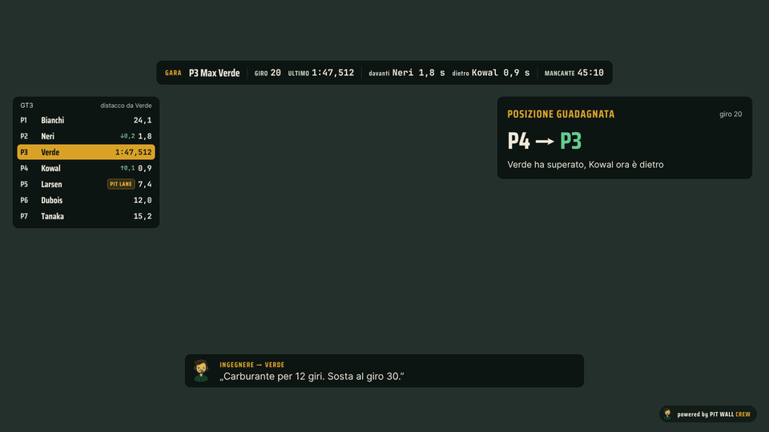
NUOVOPagina «Overlay OBS» con descrizione e 5 passi per iniziare.
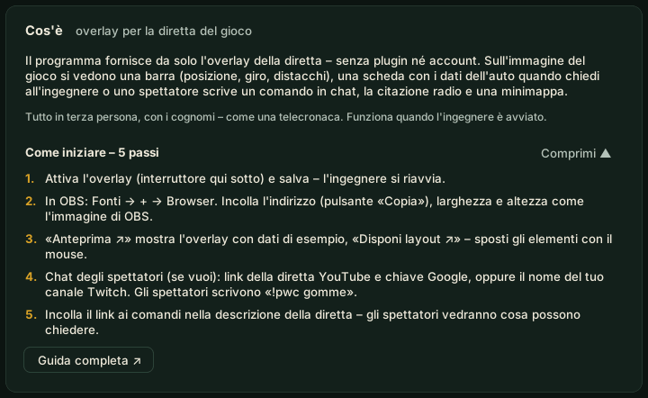
NUOVOConfronto auto nelle funzioni sperimentali, con il tempo delle soste; a voce «quale auto è migliore?».

NUOVOIl consiglio sulle gomme tiene conto che le gomme nuove fredde all'inizio sono più lente.
NUOVOL'ingegnere risponde a «danni al motore?».
NUOVOAssetto Corsa con CSP: anteriore e posteriore al limite di aderenza direttamente dai dati gomme del gioco.
CORREZIONEPressioni: consiglio breve, meno spesso, in gara solo prima della sosta.
CORREZIONE«Salva l'assetto» salva anche le pressioni e i consigli del rapporto.
CORREZIONECaricare un altro assetto non dà più falsi avvisi.
CORREZIONEUn arco lungo (es. Paddock Hill) è una sola curva.
CORREZIONEPit wall: correzioni a tabella rivali, grafico delle posizioni e mappa del confronto giri.
CORREZIONE«Collega alla squadra» riavvia subito l'ingegnere con la nuova squadra.
CORREZIONEFinestra: singolare corretto con il numero 1 (es. «1 giro», non «1 giri»).
Versione 0.4.5.0 (22.11.2026)
NUOVOTraiettoria (versione di prova, versione completa): ogni sezione del circuito vista dall'alto – la tua traiettoria contro la migliore (tua o di un compagno) e consigli su dove guidare diversamente.

NUOVOOverlay OBS per streamer: barra e schede con i dati dell'auto, minimappa della classe, duello (chi raggiunge chi e in quale stint); gli spettatori chiedono dalla chat di YouTube.

NUOVOL'overlay funziona anche quando guida un compagno; impostazioni nella pagina «Overlay OBS» della finestra.
NUOVOAl traguardo l'ingegnere si complimenta con tutta la squadra: giro più veloce e guida più costante; l'overlay OBS mostra la scheda «TRAGUARDO».
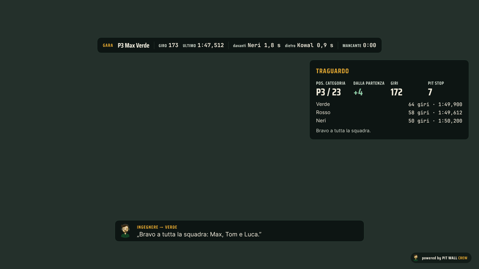
NUOVOLimiti della pista suddivisi per i piloti dell'auto – a voce e sull'overlay.

NUOVOPit Wall: grafico delle posizioni di tutta la classe, traiettorie dei piloti nel confronto dei giri, «piano superato» ed età delle gomme dei rivali.

NUOVOIl Pit Wall aperto dal programma chiede conferma prima di passare il browser a un'altra squadra; il nome della squadra è in alto.
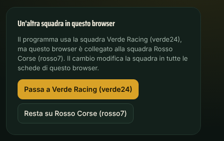
NUOVOPit Wall «Dal vivo»: ultimo stato dell'auto quando nessuno guida.
NUOVOProgramma: ora del gioco accanto a quella reale, notte calcolata dall'ora del gioco.
NUOVOProva del microfono con riascolto: dopo la registrazione ti riascolti e vedi cosa ha capito l'ingegnere.
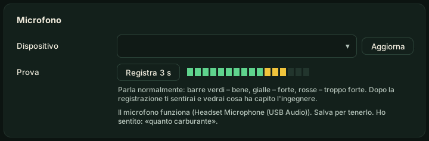
NUOVO«Primi passi» spunta ciò che è già configurato.

NUOVONuove domande: ultimo pit stop, soste ed età delle gomme di un rivale, media degli ultimi giri, «come va Amadeusz in T5?», «quante volte sono uscito di pista?», «sto esagerando?», «quanti giri in totale?».
NUOVOA voce: «ricordami tra 5 giri di…» e «pit stop tra 12 giri».
NUOVOCambio pilota a voce più breve: «pilota Rossi».
NUOVO«Duello con Rossi» funziona come «tieni d'occhio Rossi»; la finestra e l'overlay OBS ricordano il comando.
NUOVOAvvisi di doppiaggio «solo prima della frenata».
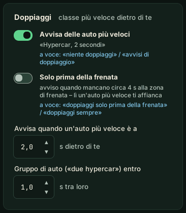
NUOVOBip con «premi, parla, premi» (disattivabili).

NUOVOL'ingegnere avvisa quando cambia la gommatura della pista.
CORREZIONETemperatura dei freni in LMU in °C (era circa 270° più alta).
CORREZIONEFair share: i giri dei compagni fatti quando il programma non vedeva l'auto non vanno più al pilota che è salito.
CORREZIONEIl fair share conta anche un pilota che non usa il programma (preso dai turni della squadra).
CORREZIONEUn pit stop misurato da metà (auto presa ai box) non rovina più i tempi di pit stop nel piano.
CORREZIONEIl briefing dopo aver preso l'auto aspetta la fine del rifornimento e dà lo stato dopo il servizio.
CORREZIONEBriefing per il pilota successivo: piano fino al traguardo calcolato dopo il rifornimento.
CORREZIONEConfronto dei giri: perdita esatta, senza falsa perdita alla partenza.
CORREZIONEGiro migliore senza tempo cancellato per limiti della pista.
CORREZIONERiconoscimento vocale migliore: nomi in base al suono, «Gomme.» come domanda, più parole al posto di «controlla».
CORREZIONECon «tieni d'occhio» da solo, l'ingegnere chiede il cognome; capisce anche un cognome dettato lettera per lettera.
CORREZIONE«Smetti di sorvegliare» funziona subito, senza IA.
CORREZIONE«Imposta il carburante a 80» imposta il rifornimento; l'IA non imposta più il rifornimento se non ne parli.
CORREZIONEIA: una frase del traduttore su sé stesso non viene più presa per parole del pilota.
CORREZIONEMessaggi: settori ordinali, virgola decimale, consigli dal giro di un compagno e avvisi di doppiaggio meno frequenti.
CORREZIONEAltre lingue: risposte, briefing al cambio pilota, consigli dal giro di un compagno e avviso fair share tradotti anche senza chiave Groq.
CORREZIONEPit Wall: fair share di tutta la squadra, elenco completo dei piloti nel piano degli stint, auto sulla mappa senza tornare indietro.
CORREZIONEFinestra: un campo «Stint» svuotato non torna al vecchio valore.
CORREZIONEIl gettone «Squadra» nella finestra mostra chiaramente la connessione e il pilota.
CORREZIONESpotter: dopo «three wide» dice subito «two wide» e il lato dell'avversario.
CORREZIONEAltre lingue: risposte dell'IA sempre nella lingua del pilota (alcune arrivavano in polacco).
CORREZIONEChat YouTube: i comandi degli spettatori compaiono in 1–2 s (una connessione invece di richieste ripetute).
CORREZIONELo spegnimento di Windows non viene più segnalato come crash dell'ingegnere.
Versione 0.4.4.12 (20.11.2026)
CORREZIONEMappa della pista nel rapporto: le chicane (es. la prima di Monza) hanno la forma reale dopo un giro pulito.
Versione 0.4.4.11 (20.11.2026)
NUOVOFunzioni sperimentali (tester): scheda «Test setup» – A/B corretto per carburante e gomme, curve, usura gomme, bilanciamento; a voce «sto provando un nuovo setup».

CORREZIONEL'ingegnere capisce più domande, anche in altre lingue: «quanto manca al terzo?», «limiti della pista?», «e il fast bump?», «metti 15 litri», «mi senti?».
CORREZIONEQuando l'ingegnere non capisce una domanda, lo dice nella lingua del pilota.
CORREZIONE«Controlla …» in prove e qualifiche confronta gli ultimi giri.
CORREZIONE«Come sono le gomme?» dopo un pitstop parla solo delle gomme nuove.
CORREZIONEIl giudizio su una modifica dopo il consiglio su cordoli e talonamento è concreto.
CORREZIONEMonza: numeri delle curve come sulla mappa nell'abitacolo; una curva in pieno non è una curva.
CORREZIONEDomande sul rapporto di guida: l'ingegnere conosce anche freni e pressioni delle gomme.
CORREZIONEPit wall: correzioni dalla revisione del codice (aggiunta piloti, mappa della pista, esportazione CSV).
Versione 0.4.4.10 (16.11.2026)
CORREZIONEPorsche 911 GT3 R (LMU): consigli sugli ammortizzatori nel verso giusto – 1 è il più rigido, 18 il più morbido.
Versione 0.4.4.9 (16.11.2026)
NUOVOVolume a voce: «più forte» / «più piano» e «spotter più forte» / «spotter più piano»; cursore del volume separato per lo spotter.
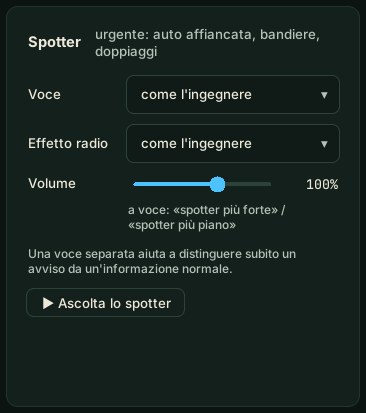
CORREZIONEAssetto Corsa: il consiglio sulla pressione indica la ruota (sinistra / destra) quando sono diverse.
Versione 0.4.4.8 (15.11.2026)
CORREZIONEAssetto Corsa: la mappa del circuito torna a vedersi nel rapporto di guida.
Versione 0.4.4.7 (15.11.2026)
NUOVORapporto di guida, scheda «Carburante» / «Energia»: anche il massimo consumato in un giro (con l'energia, anche il carburante).

CORREZIONEBarra vuota sotto «Messaggi» al primo avvio di una nuova versione.
Versione 0.4.4.6 (15.11.2026)
CORREZIONELa finestra non si blocca più per un attimo durante il controllo degli aggiornamenti all'avvio.
CORREZIONEComandi della sosta: «pressione davanti, 2 giù» con la virgola, correggersi nella frase («no, sinistre») e «rifornisci a metà».
Nyheder
Ændringer i de seneste versioner af Pit Wall Crew.
Version 0.4.6.0 (25.11.2026)
NYiRacing: ingeniør, spotter og pit wall – brændstof, strategi, rivaler, vejr og kørselsrapport som i LMU.
NYiRacing: pitstop med stemme – brændstof, dæk, tryk, hurtig reparation, visker af forrude.
NYiRacing: hændelser, flag (også „Meatball“), pit-gade og skader med stemme.
NYiRacing: skøn over iRating-ændringen, feltets styrke og din plads i splitten.
NYiRacing: rapport fra telemetrifiler (.ibt) – dæk, blokerede hjul, ophæng, stigning i tryk.
NYiRacing, ovaler: stram eller løs i hver fase af svinget, træneren i forhold til rivalerne og et råd om, hvad du skal ændre i opsætningen.

NYiRacing: startplads og linje ved start og genstart, positioner beregnet live.
NYiRacing: sammenligning af indlæste opsætninger og råd ud fra dæktemperaturer i boksen.
NYiRacing: med stemme – rattets kraft, kameraer, replay og spilchatten.
NYiRacing: banekort og kørelinje ud fra hastighed og bilens retning.
NY„Tank op til mål med det højeste / gennemsnitlige / laveste forbrug“.
NYIndstilling: svar på spørgsmålet med det samme, også når nogen kører ved siden af.
NYPit wall: rattets graf i omgangssammenligningen.
NYKørselsrapport i dine enheder: brændstof, temperaturer, tryk, hastigheder og afstande.
NYPåmindelser om hændelser: ved pit-indkørslen, efter pit-udkørslen, når det begynder at regne, på sidste omgang – også fra pit wall.
NYKørelinje i kørselsrapporten, hos træneren i træning og på spørgsmålet „hvordan er min linje i T5?“.
NYBrændstofbesparelse: hvor du skal slippe speederen – opbremsninger efter de længste lige strækninger, med afstand.
NYiRacing: når pit-gaden åbner under gult – køre ind eller blive ude (brændstof, dæk, positioner).
NYiRacing: reparationstid fra spillet i vurderingen af, om reparationen kan betale sig.
NYPit wall: når føreren er træt, et hint om at skifte fører ved næste pitstop.
NY„Hvor meget ingeniøren taler“ dækker også omgangsindhentning, langsomme biler langt væk, hændelser og besparelse; kontakten „I træning kun det vigtige“.
NY„Tjek alt“ på siden Teknisk support – hvad der virker, og hvad der mangler.
NYNy Hjælp: Start (første skridt, hvad du skal indstille i LMU, Assetto Corsa og iRacing), Vejledning med én søgning, Teknisk support.
NYBilsammenligning: en bil uden kryds forsvinder fra sammenligningen (rundetiderne bliver).
NYiRacing: ingeniøren siger, når telemetri ikke bliver optaget, og foreslår, hvordan man slår den permanent til.
NYOBS-overlay: færdige indstillinger af bjælken med ét klik – Fuld, Kort, Udvidet.
NYOBS-overlay: adresser til alle layouts og linket „Kommandoer for seere“ (til streamens beskrivelse) under fanen Overlay; på kommandosiden et link til Patreon.
NYSpotter med rumlyd (valgfrit): en bil til venstre for dig høres i venstre høretelefon.
NYEfter den anden udflugt med samme årsag: råd, du kan ændre fra cockpittet: ABS, TC eller bremsebalance.
NYiRacing: nedtælling til din boks i pitlanen – 100, 50, 30, 20, 10 meter.
NYInstallationsprogram på 7 sprog.
RETTELSESpotter: ved lang kørsel side om side „stadig til venstre“ sjældnere, „frit“ altid med det samme.
RETTELSEFlere langsomme biler på én gang – én advarsel i stedet for flere.
RETTELSEStart på en session i regn: „Det regner“, ikke „Det begynder at regne“.
RETTELSEKlasse opkaldt efter bilen, sagt med mærket alene („Ligier, 2 sekunder“).
RETTELSEFejlagtigt genkendte sætninger (f.eks. filmafslutninger) når ikke frem til ingeniøren.
RETTELSERivalernes navne uden det nummer, spillet tilføjer.
RETTELSEPitstop indstillet med stemme: ved indkørslen gentager ingeniøren din indstilling, ikke planen.
RETTELSEIngen råd om besparelse, når der er nok brændstof til mål.
RETTELSEBanens gummering: stilhed de første 2 minutter af hver session, også efter en genstart.
RETTELSEAI ændrer ikke dækkene i pit-menuen, når du ikke har nævnt dæk.
RETTELSE„Hvad er mit forbrug?“ giver gennemsnittet pr. omgang; i LMU „hvor gummeret er banen?“ – gummeringsniveauet.
RETTELSEBedre forstået: „hvad er min seneste tid?“, „hvad er afstandene?“, „hold øje med …“ på navnets lyd, „jeg vil ikke spare“, „motorens tilstand“.
RETTELSEEn besked fra pit wall-kollegaen går ikke tabt i de nyere beskeder fra ingeniøren og heller ikke efter tryk på taleknappen.
RETTELSEIngen „Box, box“, når du har flyttet stoppet på pit-omgangen („mål 25“).
RETTELSEOvervåget rival: én sætning om afstanden, ikke to.
RETTELSERåd om tryk for for og bag i én sætning.
RETTELSEAssetto Corsa: „Du har overrevet motoren“ siges også ved overrevning ved hvert gearskift – højst hvert 2. minut eller hver 5. % af levetiden.
RETTELSEKorte baner: sætninger med en omgangstid under et minut oversat til alle sprog.
RETTELSEDemo: svar på „hvor mange gange har jeg kørt ud af banen?“ og „kører jeg for hårdt?“.
RETTELSERåd efter en omgang: korrekt bøjning af listen over sving („fra 2 sving“); på de øvrige sprog alle råd uden Groq-nøgle.
RETTELSETræner i løbet: ros i mål uden svingnummer, som tipsene.
RETTELSEiRacing: tæt på grænsen for hændelser uden opfordringer til at angribe.
RETTELSEKørelinje: Den stiplede linje viser din bedste omgang i stedet for den sidste gennemkørsel.
RETTELSEOBS-overlay, »Arrangér layout«: Et tårn, der er slået fra i programvinduet, har et øje med en streg igennem – et klik på øjet tænder det.
RETTELSEiRacing: beskrivelser af rivaler og råd efter en omgang oversat uden Groq-nøgle.
RETTELSEVindue: glatte cirkler, flueben, skyderknapper og minikortet over sving i rapporten – uden takkede kanter; tydelige pile „→“.
RETTELSESiden Ingeniør i et smalt vindue: statusser og noter i kortene går nu over til næste linje i stedet for at blive skåret af.
RETTELSETaleknap: når rattet dukker op efter programmet er startet, viser vinduet dets navn i stedet for kun „ingen“.
RETTELSEPolsk: „pitlane“ i stedet for „aleja“ – ingeniør, vindue, Pit Wall og OBS-overlay.
RETTELSESvingkort i rapporten: svingnumre ved siden af banen, ikke på linjen.
Version 0.4.5.1 (23.11.2026)
NYOBS-overlay: eget layout af elementerne for hver scene, udseende indstilles i vinduet.
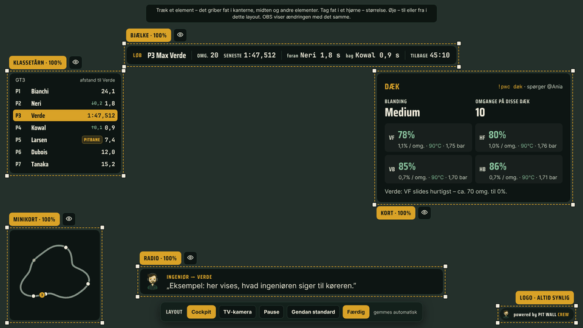
NYOBS-overlay: klassetårn, hændelseskort og seerkommandoer fra Twitch-chatten.
NYSiden »OBS-overlay« med beskrivelse og 5 trin til start.
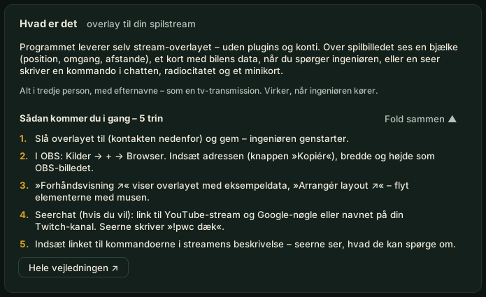
NYBilsammenligning i de eksperimentelle funktioner, med pitstoptid; med stemmen »hvilken bil er bedst?«.

NYDækrådet tager højde for, at nye kolde dæk i starten er langsommere.
NYIngeniøren svarer på »motorskade?«.
NYAssetto Corsa med CSP: for og bag på grebsgrænsen direkte fra spillets dækdata.
RETTELSEDæktryk: kort råd, sjældnere, i løbet kun før pitstop.
RETTELSE»Gem opsætningen« gemmer også dæktryk og rådene fra rapporten.
RETTELSEAt indlæse en anden opsætning giver ikke længere falske advarsler.
RETTELSEEn lang kurve (fx Paddock Hill) er ét sving.
RETTELSEPit wall: rettelser i rivaltabellen, positionsgrafen og kortet i omgangssammenligningen.
RETTELSE»Forbind til holdet« genstarter straks ingeniøren med det nye hold.
RETTELSEVindue: korrekt ental ved tallet 1 (fx »1 omgang«, ikke »1 omgange«).
Version 0.4.5.0 (22.11.2026)
NYKørelinje (prøveversion, fuld version): hver banesektion set ovenfra – din linje mod den bedste (din eller en holdkammerats) og råd om, hvor du skal køre anderledes.
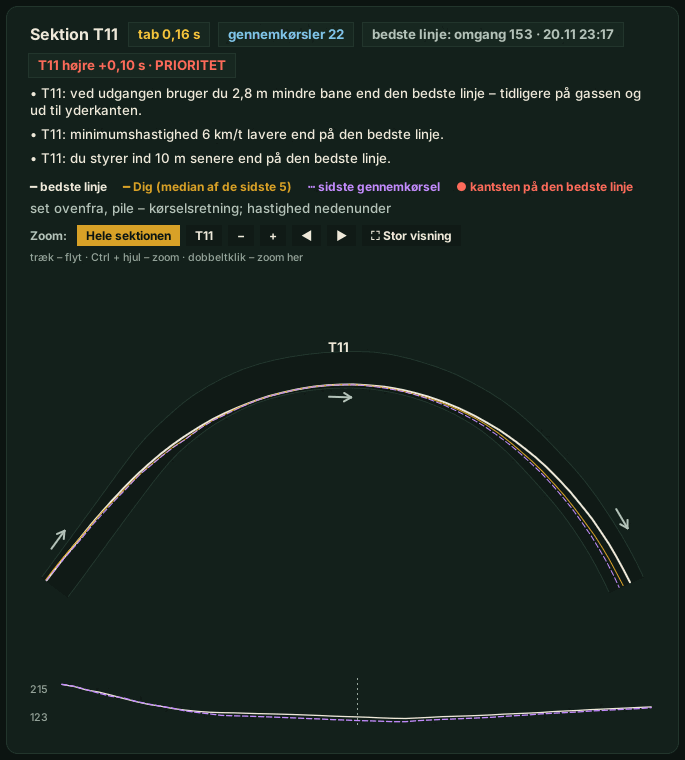
NYOBS-overlay til streamere: bjælke og kort med bilens data, minikort over klassen, duel (hvem indhenter hvem og i hvilket stint); seerne spørger fra YouTube-chatten.

NYOverlayet virker også, når en holdkammerat kører; indstillinger på siden »OBS-overlay« i vinduet.
NYVed målstregen roser ingeniøren hele holdet: hurtigste omgang og mest jævne kørsel; OBS-overlayet viser kortet »MÅL«.

NYTrack limits fordelt på bilens kørere – med stemmen og på overlayet.

NYPit Wall: positionsgraf for hele klassen, kørernes linjer i omgangssammenligningen, »plan forældet« og rivalernes dækalder.

NYPit Wall åbnet fra programmet spørger, før browseren skiftes til et andet hold; holdets navn står øverst.
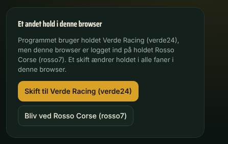
NYPit Wall »Live«: bilens seneste status, når ingen kører.
NYKøreplan: tid i spillet ved siden af den rigtige, nat regnet ud fra tiden i spillet.
NYMikrofontest med afspilning: efter optagelsen hører du dig selv og ser, hvad ingeniøren forstod.
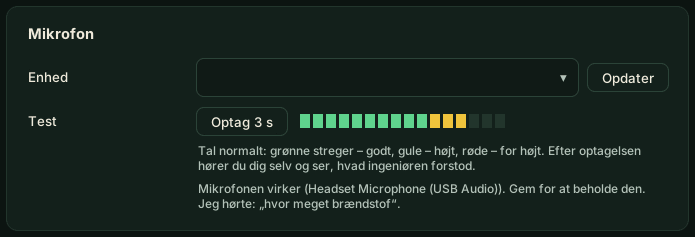
NY»Første skridt« markerer det, der allerede er sat op.
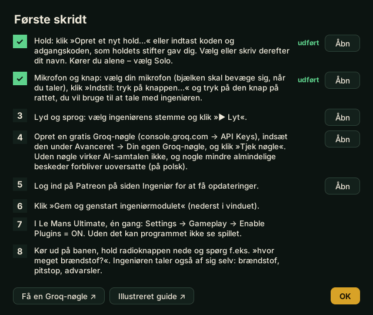
NYNye spørgsmål: sidste pitstop, en rivals stop og dækalder, gennemsnit af de seneste omgange, »hvordan kører Amadeusz i T5?«, »hvor mange gange kørte jeg af banen?«, »kører jeg for hårdt?«, »hvor mange omgange bliver løbet?«.
NYMed stemmen: »mind mig om om 5 omgange, at…« og »pitstop om 12 omgange«.
NYKortere kørerskift med stemmen: »kører Jensen«.
NY»Duel med Jensen« virker som »hold øje med Jensen«; vinduet og OBS-overlayet viser kommandoen.
NYAdvarsler om overhaling af bagmænd »kun før opbremsning«.

NYBip ved »tryk, tal, tryk« (kan slås fra).

NYIngeniøren siger til, når gummiet på banen ændrer sig.
RETTELSEBremsetemperaturer i LMU i °C (var ca. 270° for høje).
RETTELSEFair share: holdkammeraters omgange fra den tid, hvor programmet ikke så bilen, går ikke længere til den kører, der satte sig ind.
RETTELSEFair share tæller også en kører, der ikke bruger programmet (fra holdets stint-rækkefølge).
RETTELSEEt pitstop målt fra midten (bilen overtaget i pitten) ødelægger ikke længere pitstoptiderne i planen.
RETTELSEBriefingen efter overtagelse af bilen venter, til tankningen er færdig, og giver status efter service.
RETTELSEBriefing til næste kører: planen til mål beregnes efter tankningen.
RETTELSEOmgangssammenligning: præcist tab, intet falsk tab ved start.
RETTELSEBedste omgang uden tid annulleret for track limits.
RETTELSEBedre talegenkendelse: navne efter lyd, »Dæk.« som spørgsmål, flere ord i stedet for »hold øje med«.
RETTELSESiger du kun »hold øje med«, spørger ingeniøren efter navnet; et bogstaveret navn forstås også.
RETTELSE»Stop med at holde øje« virker med det samme, uden AI.
RETTELSE»Sæt brændstof til 80« virker nu som tankkommando; AI'en ændrer ikke længere tankningen, når du ikke taler om den.
RETTELSEAI: oversætterens sætning om sig selv tages ikke længere for kørerens ord.
RETTELSEBeskeder: sektorer som ordenstal, decimalkomma, sjældnere råd fra en holdkammerats omgang og advarsler om overhaling.
RETTELSEAndre sprog: svar, briefinger ved kørerskift, råd fra en holdkammerats omgang og fair share-advarslen er også oversat uden Groq-nøgle.
RETTELSEPit Wall: fair share for hele holdet, fuld kørerliste i stintplanen, biler på kortet hopper ikke tilbage.
RETTELSEVindue: et tømt »Stint«-felt vender ikke tilbage til den gamle værdi.
RETTELSEMærket »Hold« i vinduet viser tydeligt forbindelsen og køreren.
RETTELSESpotter: efter »three wide« siger den straks »two wide« og modstanderens side.
RETTELSEAndre sprog: AI-svar altid på kørerens sprog (nogle kom på polsk).
RETTELSEYouTube-chat: seernes kommandoer vises efter 1–2 s (én forbindelse i stedet for gentagne forespørgsler).
RETTELSENedlukning af Windows meldes ikke længere som et nedbrud af ingeniøren.
Version 0.4.4.12 (20.11.2026)
RETTELSEBanekort i rapporten: chikaner (f.eks. den første i Monza) får deres rigtige form efter én ren omgang.
Version 0.4.4.11 (20.11.2026)
NYEksperimentelle funktioner (testere): kortet „Setuptest“ – A/B korrigeret for brændstof og dæk, sving, dækslid, balance; med stemmen „jeg tester et nyt setup“.

RETTELSEIngeniøren forstår flere spørgsmål, også på andre sprog: „hvor langt er der til tredje?“, „track limits?“, „hvad med fast bump?“, „sæt 15 liter“, „kan du høre mig?“.
RETTELSENår ingeniøren ikke forstår et spørgsmål, siger han det på kørerens sprog.
RETTELSE„Hold øje med …“ i træning og kvalifikation sammenligner de seneste omgange.
RETTELSE„Hvordan er dækkene?“ efter et pitstop taler kun om de nye dæk.
RETTELSEVurderingen af en ændring efter rådet om kantsten og bundslag er konkret.
RETTELSEMonza: svingnumre som på kortet i cockpittet; en bue taget for fuld gas er ikke et sving.
RETTELSESpørgsmål om kørselsrapporten: ingeniøren kender også bremser og dæktryk.
RETTELSEPit wall: rettelser fra kodegennemgangen (tilføjelse af kørere, banekort, CSV-eksport).
Version 0.4.4.10 (16.11.2026)
RETTELSEPorsche 911 GT3 R (LMU): dæmperråd i den rigtige retning – 1 er hårdest, 18 blødest.
Version 0.4.4.9 (16.11.2026)
NYLydstyrke med stemmen: »højere« / »lavere« og »spotter højere« / »spotter lavere«; egen lydstyrkeskyder til spotteren.

RETTELSEAssetto Corsa: trykrådet siger hvilket hjul (venstre / højre), når de er forskellige.
Version 0.4.4.8 (15.11.2026)
RETTELSEAssetto Corsa: Banekortet i kørselsrapporten vises igen.
Version 0.4.4.7 (15.11.2026)
NYKørselsrapport, kortet »Brændstof« / »Energi«: også det højeste forbrug på én omgang (med energi også brændstof).

RETTELSETom bjælke under »Beskeder« ved første start af en ny version.
Version 0.4.4.6 (15.11.2026)
RETTELSEVinduet fryser ikke længere et øjeblik, mens der søges efter opdateringer ved start.
RETTELSEPitstop-kommandoer: »tryk foran, 2 ned« med komma, rettelse midt i sætningen (»nej, venstre«) og »tank halvt op«.